46/50 lolos audit dan terpasang. Semua karakter dipilih dari entri dengan informasi lengkap. Ilustrasi adalah interpretasi artistik AI berdasarkan sumber riset.
Huodou
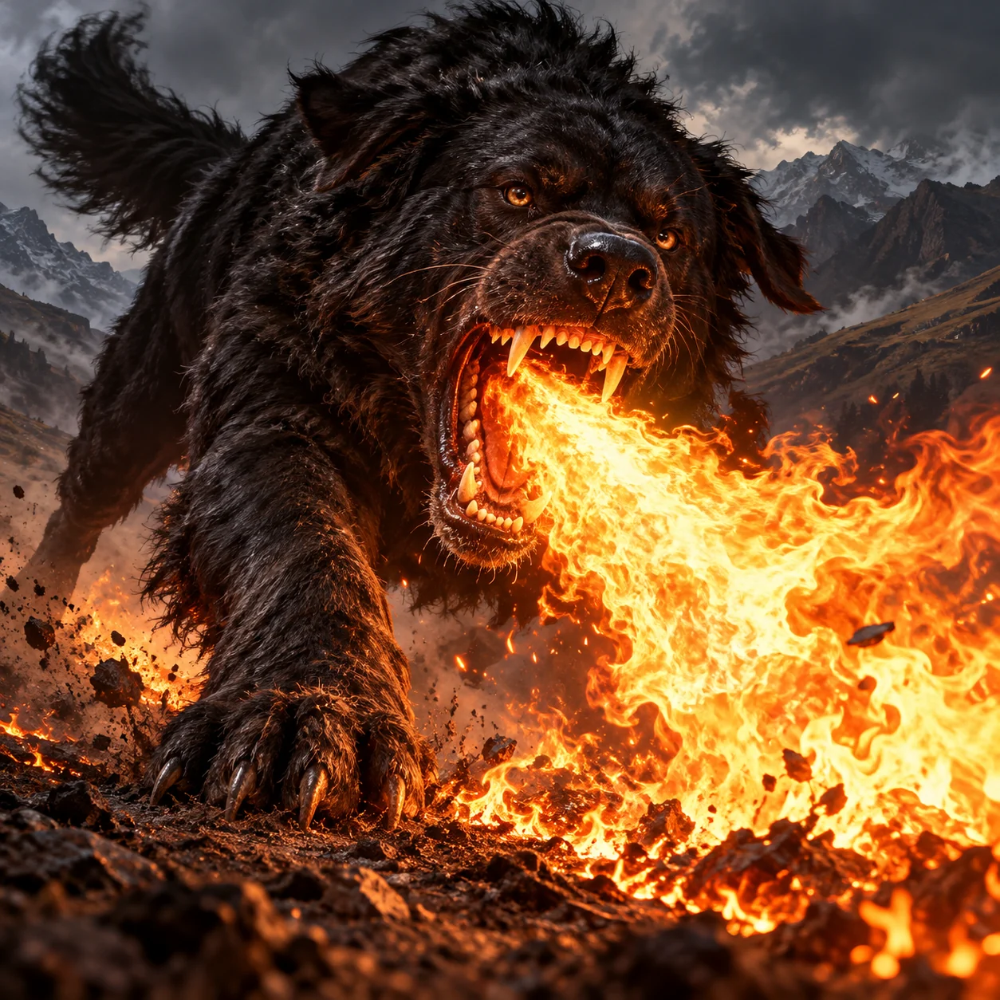
large black fire-spitting dog
Aura: A forceful stream of real fire emerges directly from the open canine mouth, scorching ground immediately ahead; no bodily glow [huodou-c02, huodou-c09]
Audit ciri dan sumber
- [object Object]
- [object Object]
- [object Object]
Native inspection: one black canine head and two eyes, mouth fire directly grounded in c02/c09, forward lunge, one visible tail and naturally occluded rear limbs; no extra appendages, symbols or border. Seven Sangar checks yes; threat is retained at thumbnail size.
Review sumberONE original square premium painterly cinematic Mythics illustration of huodou, large black fire-spitting dog.
ANATOMY: One large black dog: one canine head, two natural eyes, four legs, one tail; no horns or wings [huodou-c02]
MOMENT: Lunge forward across the foreground, jaws opened toward the viewer while expelling flame
POWER: A forceful stream of real fire emerges directly from the open canine mouth, scorching ground immediately ahead; no bodily glow [huodou-c02, huodou-c09]
SCALE & CAMERA: extreme low angle; tight frame and foreshortening, distinguishing anatomy clearly visible; the creature dominates 80 percent of the square; never invent colossal size beyond the documented form.
LIGHT & WEATHER: the mouth fire is the dominant amber light, fire sparks and natural smoke; physical particles only where justified by the action.
SURFACE: coarse black fur, wet black nose and teeth.
SETTING: Southern wilderness near Black Kunlun, only dark earthen ground and distant slopes [huodou-c07]
MOOD: imposing and awe-inspiring or menacing as appropriate to the documented disposition; never cute, calm or decorative. Living belief beings treated respectfully.
HARD CONSTRAINTS: render ONE native square PNG at least 1024x1024 pixels; no text, lettering, glyphs, logo, border, frame or watermark; no extra heads, limbs or fingers; no design borrowed from any film, game, anime or comic; no nudity or explicit gore; no generic glow aura, neon outline or energy ribbons.
Kapre
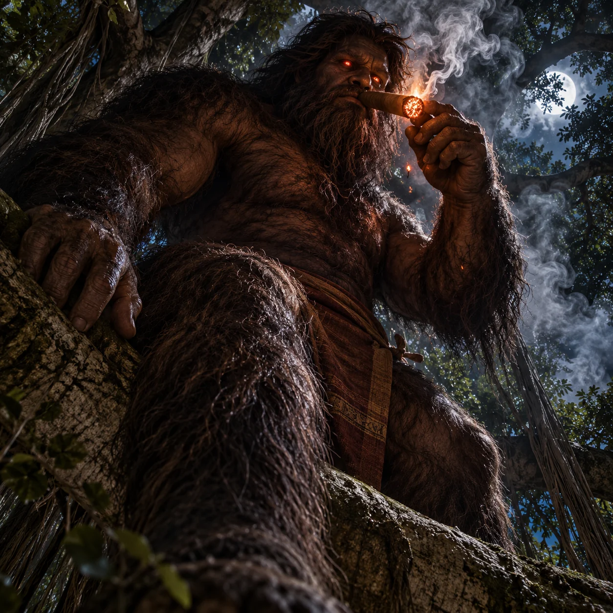
the benign but unsettling giant tree-dweller of Philippine folklore
Aura: Thick physical tobacco smoke billows from the cigar and curls around the inhabited branches, with falling cigar embers [kapre-c08, kapre-c15, kapre-c28]
Audit ciri dan sumber
- [object Object]
- [object Object]
- [object Object]
Native inspection: enormous hairy humanlike tree dweller with one head, two red eyes, two arms and two naturally foreshortened legs; opaque bahag and smoking cigar clear. Leans forward over viewer, imposing without attack or ethnic caricature. Tobacco smoke and embers c08/c15/c28, no magical effect. Seven Sangar checks yes, including thumbnail dominance.
Review sumberONE original square premium painterly cinematic Mythics illustration of kapre, the benign but unsettling giant tree-dweller of Philippine folklore.
ANATOMY: One gigantic dark humanlike muscular tree being with thick body hair, one head, two eyes, two arms and two legs; large glowing-red eyes, a large cigar, fully opaque bahag wrapped securely around hips; no caricature of living Indigenous people [kapre-c01, kapre-c08, kapre-c13]
MOMENT: Lean down from a thick tree branch toward the viewer while lifting a smoking cigar; broad looming silhouette and keen watchful gaze
POWER: Thick physical tobacco smoke billows from the cigar and curls around the inhabited branches, with falling cigar embers [kapre-c08, kapre-c15, kapre-c28]
SCALE & CAMERA: extreme low angle; tight frame and foreshortening, distinguishing anatomy clearly visible; the creature dominates 80 percent of the square; never invent colossal size beyond the documented form.
LIGHT & WEATHER: dominant cigar ember light, deep canopy shadows, smoky rim light; physical particles only where justified by the action.
SURFACE: coarse tangled body hair, bark and woven opaque cloth.
SETTING: Night in the canopy of a large Philippine balete tree [kapre-c03, kapre-c12]
MOOD: imposing and awe-inspiring or menacing as appropriate to the documented disposition; never cute, calm or decorative. Living belief beings treated respectfully.
HARD CONSTRAINTS: render ONE native square PNG at least 1024x1024 pixels; no text, lettering, glyphs, logo, border, frame or watermark; no extra heads, limbs or fingers; no design borrowed from any film, game, anime or comic; no nudity or explicit gore; no generic glow aura, neon outline or energy ribbons.
Kasogonagá
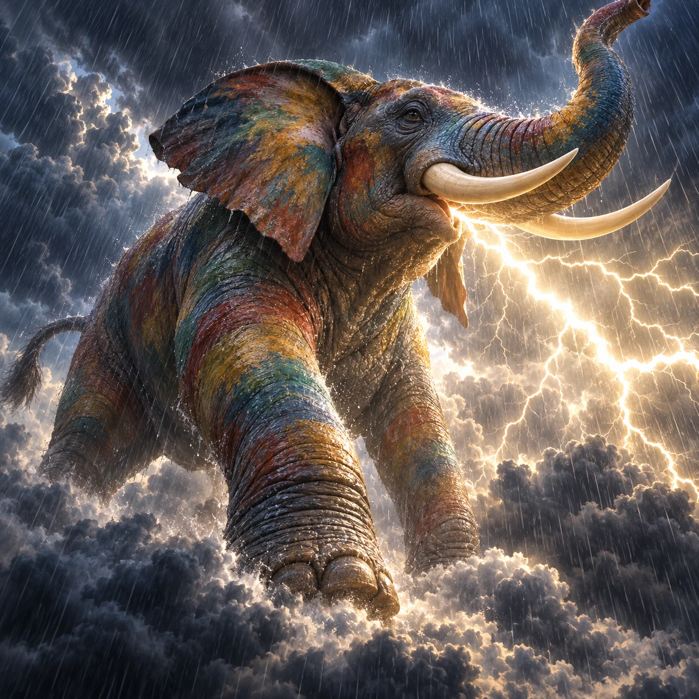
the multicolored sky-elephant variant of the Qom weather being
Aura: A branching white-gold lightning discharge originates in the open mouth, visibly crossing the dark clouds; rain falls around her [kasogonaga-c04, kasogonaga-c09]
Audit ciri dan sumber
- [object Object]
- [object Object]
- [object Object]
Native inspection: multicolored elephant variant, one head and trunk, two external tusks, ordinary toothless-in-view mouth; four legs with rear legs naturally obscured. Mouth lightning directly c04, rain c09, sky clouds c10. Diagonal descent fills square and conveys reverent awe; no monstrous mouth, glyph or aura. All seven Sangar checks pass, including 200px recognizable awe.
Review sumberONE original square premium painterly cinematic Mythics illustration of kasogonaga, the multicolored sky-elephant variant of the Qom weather being.
ANATOMY: One multicolored elephant form: one elephant head, two eyes, two ears, one trunk, four legs and one tail; ordinary elephant mouth only slightly parted and entirely toothless in view, no visible mouth teeth at all; two natural smooth external tusks; no human body, no mixing pig or anteater variants [kasogonaga-c04]
MOMENT: Stride diagonally down through clouds in a three-quarter side view, trunk stretched upward out of the way; mouth only slightly parted beneath the trunk, no mouth interior or teeth visible
POWER: A branching white-gold lightning discharge originates between the slightly parted lips, visibly crossing the dark clouds; rain falls around her [kasogonaga-c04, kasogonaga-c09]
SCALE & CAMERA: extreme low angle; tight frame and foreshortening, distinguishing anatomy clearly visible; the creature dominates 80 percent of the square; never invent colossal size beyond the documented form.
LIGHT & WEATHER: dominant mouth-lightning illumination, rain droplets and cloud rim light; physical particles only where justified by the action.
SURFACE: rain-wet wrinkled elephant skin with muted multicolored patches.
SETTING: Sky above dark clouds [kasogonaga-c10]
MOOD: reverent overwhelming awe; benevolent weather divinity, never vicious or monstrous; never cute, calm or decorative. Living belief beings treated respectfully.
HARD CONSTRAINTS: render ONE native square PNG at least 1024x1024 pixels; no text, lettering, glyphs, logo, border, frame or watermark; no extra heads, limbs or fingers; no design borrowed from any film, game, anime or comic; no nudity or explicit gore; no generic glow aura, neon outline or energy ribbons.
Manaia (mythological creature)
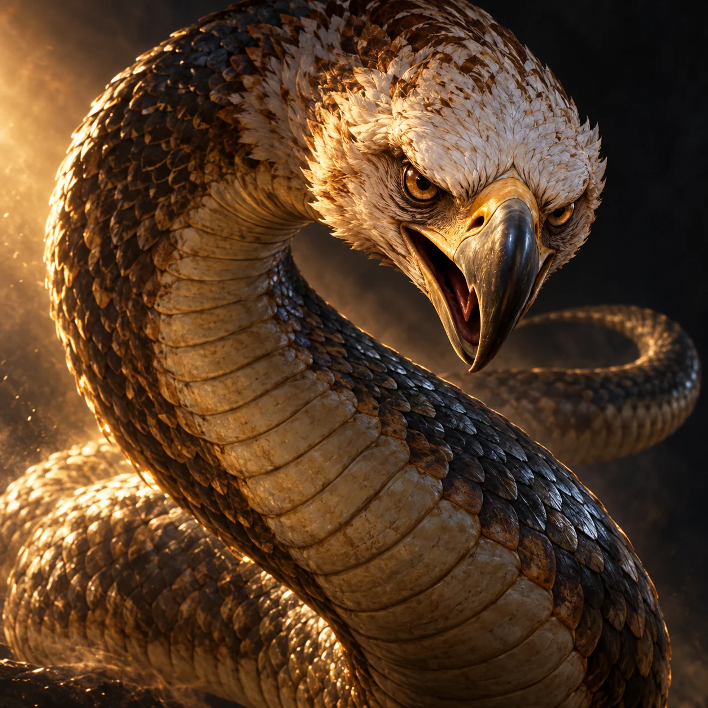
the eagle-headed serpent variant described by Hamilton
Aura: No documented visible power; reverent guardian awe through anatomy, active coil and light only [manaia-mythological-creature-c07]
Audit ciri dan sumber
Native view: one eagle head on a continuous coiling serpentine body, two eyes and hooked beak, no limbs or wings, tail tapering behind. Hamilton variant c07 consistently chosen. Forward coil and lowered gaze dominate; no supernatural effects, symbols, nudity or static statue. All seven checks pass at native and200px.
Review sumberONE original square premium painterly cinematic Mythics illustration of manaia mythological creature, the eagle-headed serpent variant described by Hamilton.
ANATOMY: One living serpent with one eagle head, hooked bird beak, two eyes, one continuous legless serpentine body and tapering tail; no wings, hands, horns or human torso [manaia-mythological-creature-c07]
MOMENT: Sweep forward in a powerful coiling figure, eagle head lowering toward the viewer, beak slightly opening
POWER: No documented visible power; reverent guardian awe through anatomy, active coil and light only []
SCALE & CAMERA: extreme low angle; tight frame and foreshortening, distinguishing anatomy clearly visible; the creature dominates 80 percent of the square; never invent colossal size beyond the documented form.
LIGHT & WEATHER: one dominant warm sidelight, deep shadows, strong rim light; physical particles only where justified by the action.
SURFACE: natural feathered eagle head and matte textured serpent scales.
SETTING: Unspecified dark background, no geographic location invented []
MOOD: imposing and awe-inspiring or menacing as appropriate to the documented disposition; never cute, calm or decorative. Living belief beings treated respectfully.
HARD CONSTRAINTS: render ONE native square PNG at least 1024x1024 pixels; no text, lettering, glyphs, logo, border, frame or watermark; no extra heads, limbs or fingers; no design borrowed from any film, game, anime or comic; no nudity or explicit gore; no generic glow aura, neon outline or energy ribbons.
Many-finned sea serpent
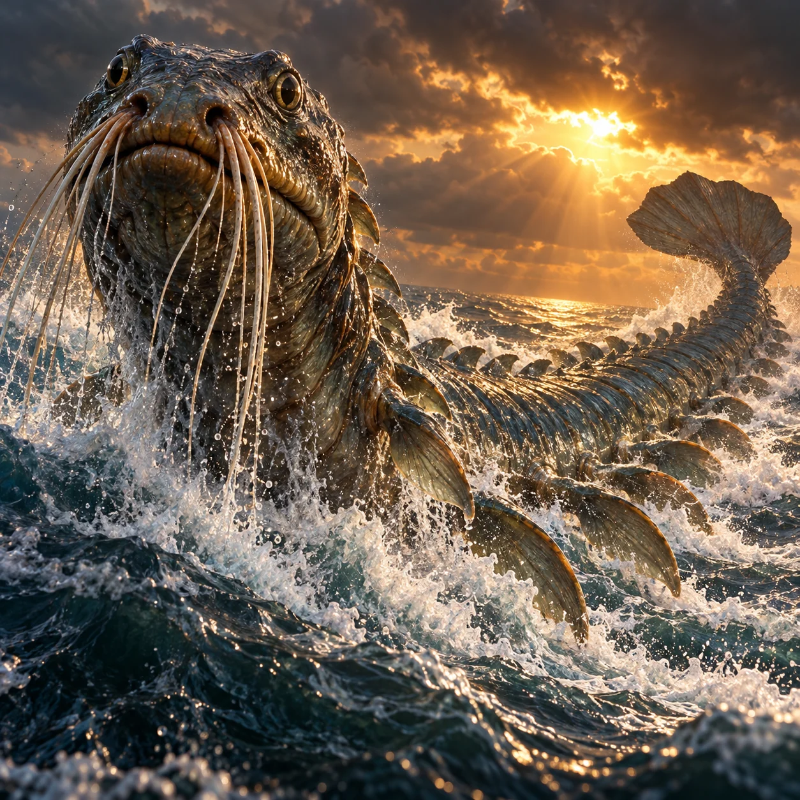
Aelian scolopendra sea-monster with nostril hairs and paired rowing appendages
Aura: Natural seawater churned by its numerous rowing appendages; spray from the head surfacing, no supernatural power [many-finned-sea-serpent-c06, many-finned-sea-serpent-c07]
Audit ciri dan sumber
- [object Object]
- [object Object]
- [object Object]
Native view: head fully above sea, two eyes and long hairs from both nostrils; elongated marine body with rows of paired rowing fins, one flat fanlike crayfish tail visible. Head surfaces toward camera and paired paddles churn real water c06/c07, no invented magical power. Strong silhouette at200px; all seven checks pass.
Review sumberONE original square premium painterly cinematic Mythics illustration of many finned sea serpent, Aelian scolopendra sea-monster with nostril hairs and paired rowing appendages.
ANATOMY: One enormous long marine serpent: one head with two eyes, very long hairs protruding from the nostrils, numerous paired paddle-like feet or fins in rows on either side of the body, one flat crayfish-like tail; no horns, wings or extra heads [many-finned-sea-serpent-c05, many-finned-sea-serpent-c06, many-finned-sea-serpent-c07]
MOMENT: Thrust the entire head out of the sea toward the viewer as rows of paddles churn the surface; the long body and flat tail remain readable diagonally across the frame
POWER: Natural seawater churned by its numerous rowing appendages; spray from the head surfacing, no supernatural power [many-finned-sea-serpent-c06, many-finned-sea-serpent-c07]
SCALE & CAMERA: extreme low angle; tight frame and foreshortening, distinguishing anatomy clearly visible; the creature dominates 80 percent of the square; never invent colossal size beyond the documented form.
LIGHT & WEATHER: one dominant dying amber sunlight shaft through dark clouds, rim-lit spray; physical particles only where justified by the action.
SURFACE: wet rough marine skin, dripping long nostril hairs and ridged flat tail.
SETTING: Open sea in the ancient Aelian account [many-finned-sea-serpent-c06, many-finned-sea-serpent-c07]
MOOD: imposing and awe-inspiring or menacing as appropriate to the documented disposition; never cute, calm or decorative. Living belief beings treated respectfully.
HARD CONSTRAINTS: render ONE native square PNG at least 1024x1024 pixels; no text, lettering, glyphs, logo, border, frame or watermark; no extra heads, limbs or fingers; no design borrowed from any film, game, anime or comic; no nudity or explicit gore; no generic glow aura, neon outline or energy ribbons.
Nāmaka
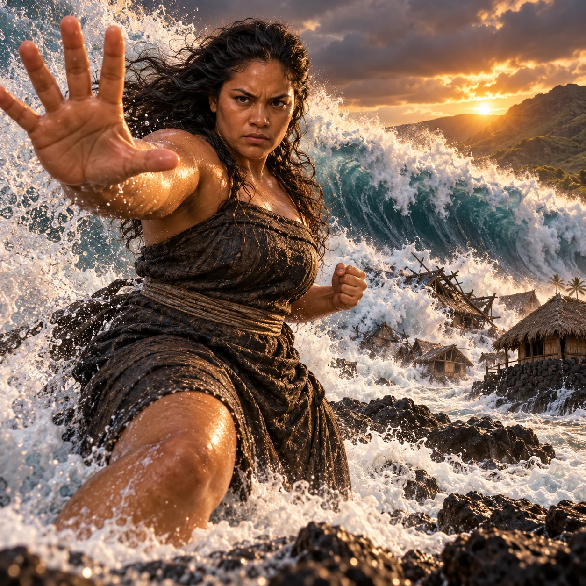
Visible female sea goddess actively sends destructive tidal flood across volcanic coast
Aura: Presence through active source-grounded subject: namaka-c05, namaka-c13, namaka-c04, namaka-c09, namaka-c11
Audit ciri dan sumber
- [object Object]
- [object Object]
- [object Object]
Native1254 reviewed: clearlyvisible solidfemale seaactor, forcefulforwardstep and5digitoutstretched palm/clenchedsecondhand, fullyopaqueclothing. Massivephysicaltidalwall destroysdwellingsc11; noabstractwaveonly, no waterformedbody/gore/text/genericglow. Fiercedivinecommand andKahikinui coast c13. Normal2arms/2legs andeditorial face/clothing; no claimofgiantheight.
Review sumberONE original square premium painterly cinematic Mythics illustration of NĀMAKA, Hawaiian sea goddess and powerful elder sister of Pele. The deity is a plainly visible WOMAN, NOT merely a wave or abstract seascape. Respectful overwhelming divine authority, no horror caricature.
ANATOMY: One adult woman, ONE head/TWOeyes/TWOarms/TWOlegs. Physical female personification grounded in the chiefess and hand-to-hand fighting narrative [namaka-c05,namaka-c13]; exact facial features and clothing are editorial and not a claimed traditional iconography. Dark hair swept back; completely opaque substantial charcoal bark-cloth inspired dress covering chest abdomen hips knees, no transparent wetfabric. No mermaid tail, horns, glowing eyes, featherheaddress, tattoos or exotic marks.
MOMENT: SURGE out of the rising surf directly towards viewer while extending one forearm forcefully across the square, palm outward with exactlyfive fingers; otherhand clenched in fist close to chest. Fierce resolute concentration, chin inclined towards viewer. Her visible head shoulders body occupy70percent of image. Groundcamera extremelyclose.
POWER: Behind her arm a dense enormous natural tidal wall physically advances and floods stone-and-wood dwellings on volcanic coast, seawater breaking roofbeams and rolling volcanic rocks. She sends tidalwaves to destroy Pele lands/homes [namaka-c04,namaka-c09,namaka-c11]. Water moves around the visible female actor, never shape her body from water. No floating energy or genericaura.
SCALE & CAMERA: Extreme lowangle at surffoot level, close foreground goddess; small distant shorehouses establish perspective and power of the flood, not factual giantheight. Face and arm remain immediatelylegible at200pixel.
LIGHT & WEATHER: One warm sunsetbreak through densecloud illuminating face and thrown spray, dark walnut shadows/antiquegold accents. Dense physical water and foam, wind and seaspray.
SURFACE: Real wet opaque cloth, ordinary fullysolid skin, windtangledhair, enormous watermass with foam, rough blacklava rock.
SETTING: Sea coast of Kahiki-nui beneath western Hale-a-ka-la slopes [namaka-c13]. Distant dwellings being overwhelmed relate to destruction of Pele homes [namaka-c11]. No otherdeity/people required.
MOOD: Powerful livingreligion sea deity with severe divinepresence and forceful action; respectful majesty, not ordinary beachportrait. NO abstractwaveonly.
HARD CONSTRAINTS: One native square PNG>=1024; no text/glyphs/logo/frame/watermark. No extrahead/arms/legs/fingers or fantasyweapons. No nudity/gore. No film/game/anime/comic design; no genericglowaura/neonoutline/energyribbons. Every supernaturalaction above grounded in statedclaim.
Nine-Eared Hound
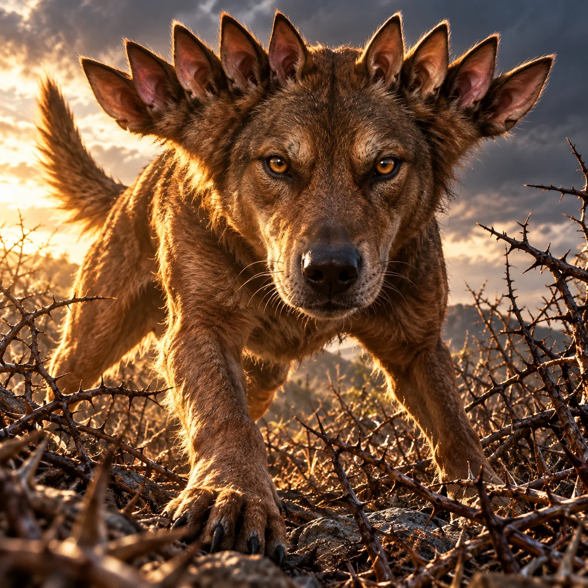
the nine-ear Guangdong Xinyu hunting-dog variant
Aura: The quivering nine ears indicate the documented hunting omen; no visible supernatural lightning or magical light [nine-eared-hound-c10, nine-eared-hound-c11]
Audit ciri dan sumber
- [object Object]
- [object Object]
- [object Object]
Native view: exactly nine distinct ears, five image-left plus four image-right, with nine pink interiors; one head, two eyes, normal four-legged hound body and one tail. Forward hunting step through thicket c11 is confrontational, no thunder power invented.9-ear count and anomalous silhouette clear at200px. Seven Sangar checks pass.
Review sumberONE original square premium painterly cinematic Mythics illustration of nine eared hound, the nine-ear Guangdong Xinyu hunting-dog variant.
CRITICAL: Previous outputs had seven ears and were rejected. This FINAL requires nine, using five on left and four on right. Nine ears must be countable without overlap.
ANATOMY: One single-headed hunting dog with EXACTLY NINE ears. The NINE ears form a wide horizontal row along the upper head, FIVE ears on image-left and FOUR ears on image-right, no central ear. Each separate ear has its own pink interior and stands fully apart from its neighbours with dark gaps. Small triangular ears, not huge overlapping ears. Count5left+4right=9. Two eyes, one nose, four legs and one tail, no horns. [nine-eared-hound-c10, nine-eared-hound-c11]
MOMENT: Circle forward around a thorn thicket and suddenly turn the face directly toward viewer, all nine ears lifted and quivering
POWER: The quivering nine ears indicate the documented hunting omen; no visible supernatural lightning or magical light [nine-eared-hound-c10, nine-eared-hound-c11]
SCALE & CAMERA: extreme low angle; tight frame and foreshortening, distinguishing anatomy clearly visible; the creature dominates 80 percent of the square; never invent colossal size beyond the documented form.
LIGHT & WEATHER: one dominant warm sidelight, deep shadows, strong rim light; physical particles only where justified by the action.
SURFACE: coarse brown dog fur, black nose, dry thorn branches.
SETTING: Wild land and a thorn thicket in the Guangdong Xinyu account [nine-eared-hound-c11]
MOOD: imposing and awe-inspiring or menacing as appropriate to the documented disposition; never cute, calm or decorative. Living belief beings treated respectfully.
HARD CONSTRAINTS: render ONE native square PNG at least 1024x1024 pixels; no text, lettering, glyphs, logo, border, frame or watermark; no extra heads, limbs or fingers; no design borrowed from any film, game, anime or comic; no nudity or explicit gore; no generic glow aura, neon outline or energy ribbons.
Nure-onna
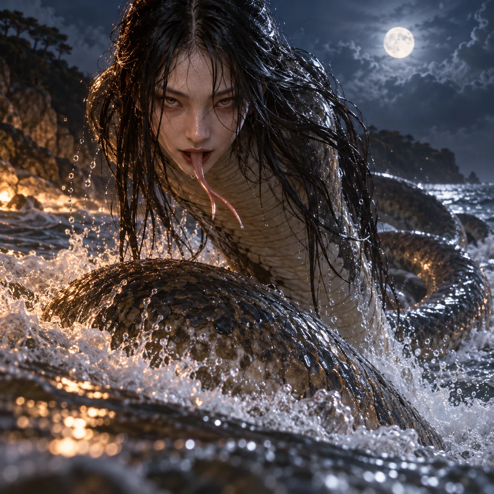
the armless enormous sea-serpent variant of the wet-haired yōkai
Aura: Natural spray driven by the surfacing snake body; predatory hunt documented, no blood-draining scene and no invented magical beams [nure-onna-c07, nure-onna-c14]
Audit ciri dan sumber
- [object Object]
- [object Object]
- [object Object]
Native view: woman head directly joining a large coiling snake body, no human torso, arms or legs; two eyes, long wet black hair and clearly forked long tongue c10. Forward surface surge drives shoreline spray; no victim or gore. Serpentine anatomy and direct predatory gaze remain menacing at200px. Seven Sangar checks pass; no text or borrowed iconography.
Review sumberONE original square premium painterly cinematic Mythics illustration of nure onna, the armless enormous sea-serpent variant of the wet-haired yōkai.
ANATOMY: One woman head on a continuous enormous snake body, one head, two eyes, no human arms, no legs, no human torso, long dripping black hair, visibly forked snake tongue; no extra head or horns [nure-onna-c01, nure-onna-c05, nure-onna-c09, nure-onna-c10]
MOMENT: Surge out of the shoreline water toward the viewer, coils driving forward, wet hair swept aside and forked tongue extending in an impending hunt
POWER: Natural spray driven by the surfacing snake body; predatory hunt documented, no blood-draining scene and no invented magical beams [nure-onna-c07, nure-onna-c14]
SCALE & CAMERA: extreme low angle; tight frame and foreshortening, distinguishing anatomy clearly visible; the creature dominates 80 percent of the square; never invent colossal size beyond the documented form.
LIGHT & WEATHER: one dominant moonbeam with warm reflected shore light, rim-lit water spray; physical particles only where justified by the action.
SURFACE: wet black hair and slick rough snake scales.
SETTING: Shoreline of Kyushu with shallow dark water [nure-onna-c04, nure-onna-c08]
MOOD: imposing and awe-inspiring or menacing as appropriate to the documented disposition; never cute, calm or decorative. Living belief beings treated respectfully.
HARD CONSTRAINTS: render ONE native square PNG at least 1024x1024 pixels; no text, lettering, glyphs, logo, border, frame or watermark; no extra heads, limbs or fingers; no design borrowed from any film, game, anime or comic; no nudity or explicit gore; no generic glow aura, neon outline or energy ribbons.
Ōseichū
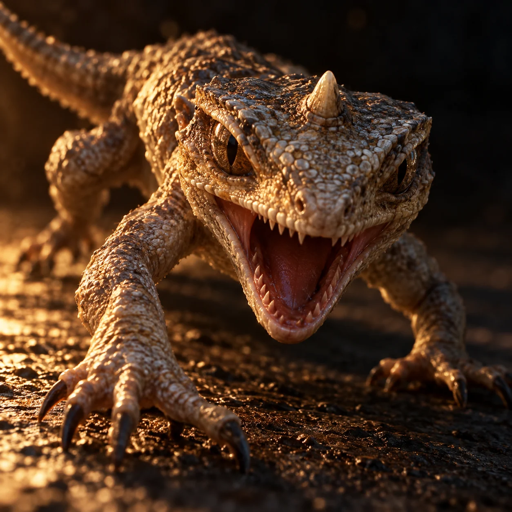
the small forehead-horned lizard-like creature in the Shiojiri summary
Aura: No documented visible physical power suitable for this scene; menace through anomalous forehead horn, macro confrontation and light only [oseichu-c06]
Audit ciri dan sumber
Native view: lizard-shaped creature with one head, two eyes, four small legs, one tail and one short forehead horn c06; macro forward lunge and open natural reptile mouth replace cute first attempt. No disease host or invented power shown. Horn/anomalous shape and braced claws remain threatening at200px. Seven checks pass, no text or gore.
Review sumberONE original square premium painterly cinematic Mythics illustration of oseichu, the small forehead-horned lizard-like creature in the Shiojiri summary.
ANATOMY: One small lizard-shaped strange creature, one angular elongated reptile head with two SMALL NARROW deeply sunken natural eyes, NOT huge round baby eyes, four small lizard legs and one tail, exactly one short tiny horn nub on its forehead, much shorter than eye diameter; no wings, no human mouth on body, no spikes or added horns [oseichu-c06]
MOMENT: Lunge urgently straight toward viewer across a dark floor, jaws opening in alarm with natural tiny lizard teeth, neck taut and forelegs fiercely braced; tense angular shape, never smile; tiny creature seen in extreme macro
POWER: No documented visible physical power suitable for this scene; menace through anomalous forehead horn, macro confrontation and light only []
SCALE & CAMERA: extreme low angle; tight frame and foreshortening, distinguishing anatomy clearly visible; the creature dominates 80 percent of the square; never invent colossal size beyond the documented form.
LIGHT & WEATHER: one dominant low warm sidelight and deep shadows; physical particles only where justified by the action.
SURFACE: rough tiny reptile scales, natural small claws and floor grain.
SETTING: Unspecified dark ground plane; no exposed human host, no body interior and no geographic location asserted []
MOOD: imposing and awe-inspiring or menacing as appropriate to the documented disposition; never cute, calm or decorative. Living belief beings treated respectfully.
HARD CONSTRAINTS: no cute baby gecko look, no huge sparkling eyes, no smooth smile; render ONE native square PNG at least 1024x1024 pixels; no text, lettering, glyphs, logo, border, frame or watermark; no extra heads, limbs or fingers; no design borrowed from any film, game, anime or comic; no nudity or explicit gore; no generic glow aura, neon outline or energy ribbons.
Panhu
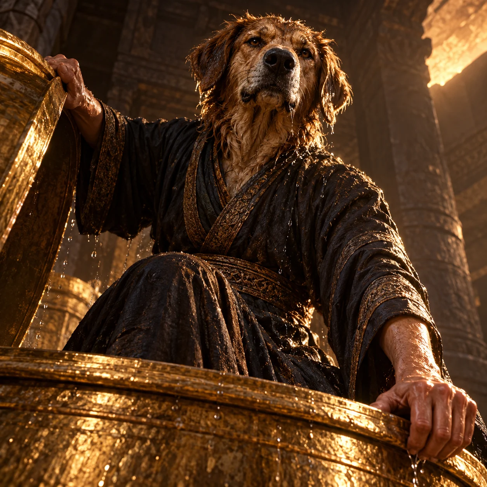
the dog-headed HUMAN ancestor at the end of an incomplete transformation
Aura: Documented dog-to-human transformation left only the doghead unchanged; show the resulting doghead on fullyhuman body emerging from goldenvessel, no magicrays or extra anatomy. [panhu-c02, panhu-c04]
Audit ciri dan sumber
- [object Object]
- [object Object]
- [object Object]
Viewed native1254 and200px. Explicit c04 incompletehumantransformation: caninehead/twoeyes/twodogears on upright HUMAN shoulders/torso/twoarms/naturalhumanhands andclothedhumanlegs. Opaque darkrobe. Stepsout of opened golden vessel with humanhands grippingrim/lid; c04 sourcequote explicitly mentions sevennights insidegoldenvessel. Headlooms downtoward lowcamera; hybridbody instantlyreadable200, commandingancestralawe anddecisiveemergence replacesordinarydog. No unclaimeddragonparts/fivecolorcaninebody/powers/text or gore; all7Sangar pass.
Review sumberONE original square premium painterly cinematic Mythics illustration of Panhu, the dog-headed HUMAN ancestor at the end of an incomplete transformation.
ANATOMY: ONE natural adult canine head with TWO dog ears/TWO eyes and a human neck/body, TWO HUMAN arms with natural FIVE-finger hands, TWO HUMAN legs. Entire body below head human, NO dog torso/forepaws/hindlegs/tail. Wear fullyOPAQUE heavy dark ancient robe over human chest/hips and legs. NO horns, wings, armor or inventeddragonfeatures. ONE plain large GOLDEN VESSEL with open lid from the transformation story. [panhu-c02, panhu-c04]
MOMENT: CLIMB out of the opened golden vessel toward the low viewer, one HUMAN hand pushes its heavy plainlid aside and the other grips the rim. Human shoulders/twoarms and upright trunk absolutely unmistakable; imposing solemn canine gaze looks down directly toward viewer, wet fur catches the light.
POWER: Documented dog-to-human transformation left only the doghead unchanged; show the resulting doghead on fullyhuman body emerging from goldenvessel, no magicrays or extra anatomy. [panhu-c02, panhu-c04]
SCALE & CAMERA: extreme low angle; Tight foreshortened half-to-threequarter HUMAN-body portrait fills85percent square; goldenvessel rim closeforeground, doghead huge byproximity; no inventedcolossalheight.
LIGHT & WEATHER: ONE narrow warm storm-sunset light seam, strong rim light on subject, deep walnut shadows; physical dust/water spray appropriate to the act, never colored magicfog.
SURFACE: richly tactile natural materials: wet skin, coarse opaque cloth, tangled hair/fur, worn wood, dark earth and stone as anatomically appropriate; no plastic.
SETTING: Uninscribed palace chamber suggested by royal transformation story, golden vessel foreground and dark plainstone behind; no princess or severed heads. [panhu-c03, panhu-c04]
MOOD: Reverent overwhelming mythic awe for a living religious tradition. The being must dominate and make the viewer feel like bowing; decisive action, never ordinary animal/human snapshot, cute, static or decorative.
HARD CONSTRAINTS: ONE native square PNG minimum1024x1024; no text/letters/glyphs/logo/frame/border/watermark. No added heads, eyes, arms, legs or fingers; no unsupported horns/wings/chimeraparts. No film/game/anime/comic design. Clothed humanoid torso/hips fullyopaque, no nudity or explicit gore. No generic glow aura/neon/runes/energy ribbons. Source claimIDs never visible text.
Pihi
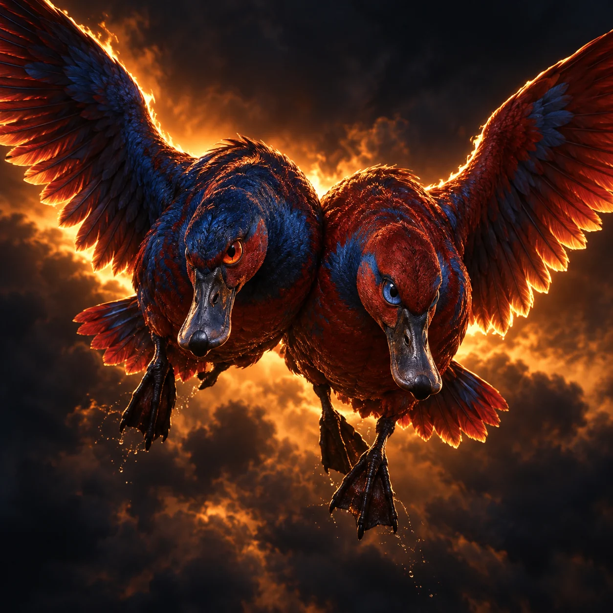
the paired one-eyed one-winged blue-red ducklike biyi form connected with Pihi
Aura: Paired flight only: each bird alone cannot fly, together they fly; natural feather movement, no elemental power [pihi-c02, pihi-c07]
Audit ciri dan sumber
- [object Object]
- [object Object]
Native view: two separate touching ducklike blue-red bodies, two heads, one visible eye per head, two sole outer wings total, two individual tails and legs; no fused two-headed bird. Coordinated descent toward viewer c02/c07, natural amber backlit feathers rather than aura. Pair anatomy reads clearly and imposing at200px; seven checks yes. No extra wing or elemental power.
Review sumberONE original square premium painterly cinematic Mythics illustration of pihi, the paired one-eyed one-winged blue-red ducklike biyi form connected with Pihi.
ANATOMY: TWO separate living ducklike birds side by side, each has one head, EXACTLY ONE EYE and EXACTLY ONE WING, blue-red feathers; TWO heads, TWO individual bodies, TWO eyes total, TWO wings total, two legs per bird and one tail per bird. The left bird has only its outer left wing, the right bird only its outer right wing; inner flanks touch but bodies are not fused [pihi-c01, pihi-c02, pihi-c07]
MOMENT: Swoop down together toward viewer in coordinated paired flight, two separate heads tilted down and their two sole wings stretched outward as one broad flying silhouette
POWER: Paired flight only: each bird alone cannot fly, together they fly; natural feather movement, no elemental power [pihi-c02, pihi-c07]
SCALE & CAMERA: extreme low angle; tight frame and foreshortening, distinguishing anatomy clearly visible; the creature dominates 80 percent of the square; never invent colossal size beyond the documented form.
LIGHT & WEATHER: one dominant dying amber backlight against near-black sky, sharply rim-lit wing feathers; physical particles only where justified by the action.
SURFACE: textured blue-red duck feathers with dark wet sheen.
SETTING: Unspecified dark sky; no unclaimed geographic scene []
MOOD: imposing and awe-inspiring or menacing as appropriate to the documented disposition; never cute, calm or decorative. Living belief beings treated respectfully.
HARD CONSTRAINTS: render ONE native square PNG at least 1024x1024 pixels; no text, lettering, glyphs, logo, border, frame or watermark; no extra heads, limbs or fingers; no design borrowed from any film, game, anime or comic; no nudity or explicit gore; no generic glow aura, neon outline or energy ribbons.
Qianliyan
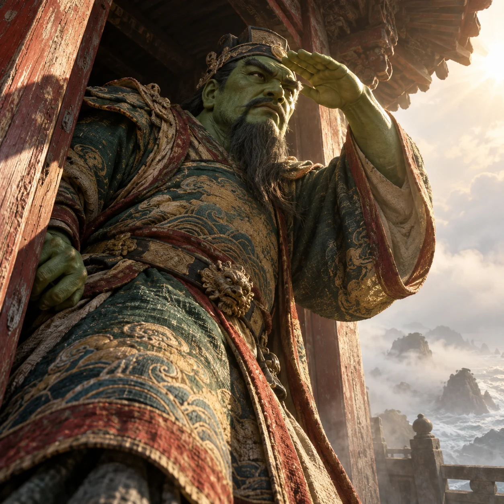
the green-skinned far-seeing Mazu temple guardian
Aura: Far-seeing vigilance protects sailors in fog and bad weather; show no eye beams, glowing magical eyes or physical weather control [qianliyan-c08]
Audit ciri dan sumber
- [object Object]
- [object Object]
- [object Object]
Native view: green-skinned single-headed temple guardian, two eyes, two arms and hands, fully opaque general robe; hand actively shades eyes c12 while leaning from Mazu doorway c01 toward fogged sea c08. No eye beam, added horns or extra eyes; gaze and extreme low framing convey protective awe at200px. All seven checks pass. Clothing ornament is editorial, not claimed iconography.
Review sumberONE original square premium painterly cinematic Mythics illustration of qianliyan, the green-skinned far-seeing Mazu temple guardian.
ANATOMY: One green-skinned guardian figure with one head, two sharp natural eyes, two arms and two hands; fully opaque layered plain ceremonial general robe, no added horns, fangs, wings or extra eyes; one hand shields his eyes from glare [qianliyan-c06, qianliyan-c12]
MOMENT: Lean forward from a temple doorway and turn his far-seeing gaze over the viewer toward the unseen sailors, lifting hand to shade the eyes
POWER: Far-seeing vigilance protects sailors in fog and bad weather; show no eye beams, glowing magical eyes or physical weather control [qianliyan-c08]
SCALE & CAMERA: extreme low angle; tight frame and foreshortening, distinguishing anatomy clearly visible; the creature dominates 80 percent of the square; never invent colossal size beyond the documented form.
LIGHT & WEATHER: one dominant late sunlight shaft that the hand shields against, deep doorway shadow and fog rim light; physical particles only where justified by the action.
SURFACE: textured green skin, rough opaque woven robe and weathered temple wood.
SETTING: Mazu temple doorway by the sea, distant fog obscuring the water [qianliyan-c01, qianliyan-c08]
MOOD: imposing and awe-inspiring or menacing as appropriate to the documented disposition; never cute, calm or decorative. Living belief beings treated respectfully.
HARD CONSTRAINTS: render ONE native square PNG at least 1024x1024 pixels; no text, lettering, glyphs, logo, border, frame or watermark; no extra heads, limbs or fingers; no design borrowed from any film, game, anime or comic; no nudity or explicit gore; no generic glow aura, neon outline or energy ribbons.
Qiqirn
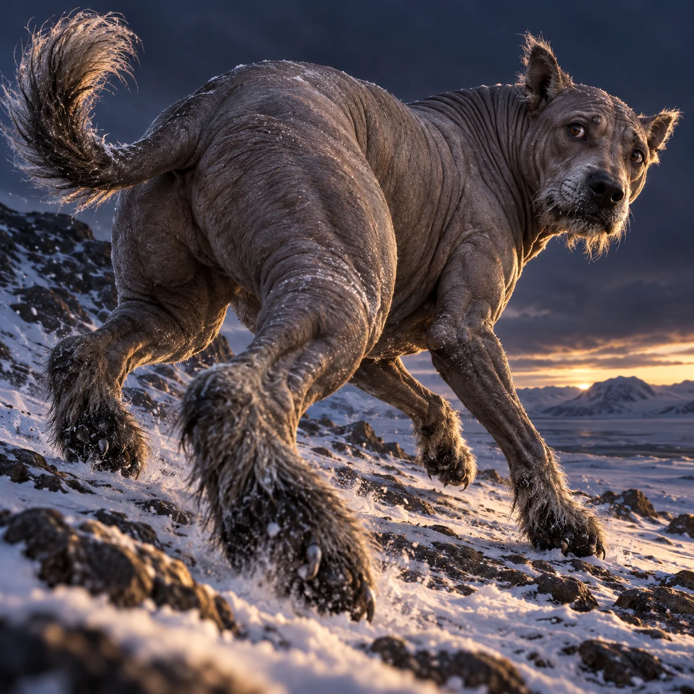
the large bald canine spirit of Inuit folklore, not Kipling many-legged Quiquern
Aura: Its presence causes convulsions, but no victim or visible magical effect shown; uncanny anatomy and sudden flight alone [qiqirn-c02, qiqirn-c03]
Audit ciri dan sumber
- [object Object]
- [object Object]
- [object Object]
Native view: large single-headed bald dog, two eyes, four legs all visible and one tail; tufts restricted to feet, mouth, ear ends and tail end c02. Scrambling away with head turned in frightened watchfulness respects c03. Bare wrinkled anatomy is uncanny at200px; no Kipling limbs or invented glowing seizure effect. All seven Sangar checks yes.
Review sumberONE original square premium painterly cinematic Mythics illustration of qiqirn, the large bald canine spirit of Inuit folklore, not Kipling many-legged Quiquern.
ANATOMY: One large bald canine spirit with one dog head, two eyes, four dog legs and one tail. Almost entirely hairless, hair ONLY on feet, around mouth, ear tips and tail tip; bare wrinkled skin everywhere else. No extra legs, second head or ordinary fur coat [qiqirn-c01, qiqirn-c02]
MOMENT: Scramble away across the foreground while twisting its head sharply back toward the viewer, startled and unsettling; not attacking humans
POWER: Its presence causes convulsions, but no victim or visible magical effect shown; uncanny anatomy and sudden flight alone [qiqirn-c02, qiqirn-c03]
SCALE & CAMERA: extreme low angle; tight frame and foreshortening, distinguishing anatomy clearly visible; the creature dominates 80 percent of the square; never invent colossal size beyond the documented form.
LIGHT & WEATHER: one dominant cold twilight sidelight with warm ground reflection, snow rim light; physical particles only where justified by the action.
SURFACE: bare wrinkled gray-brown canine skin and sparse coarse tufts only at documented points.
SETTING: Around Baffin Island, dark Arctic ground with sparse windblown snow [qiqirn-c01]
MOOD: imposing and awe-inspiring or menacing as appropriate to the documented disposition; never cute, calm or decorative. Living belief beings treated respectfully.
HARD CONSTRAINTS: render ONE native square PNG at least 1024x1024 pixels; no text, lettering, glyphs, logo, border, frame or watermark; no extra heads, limbs or fingers; no design borrowed from any film, game, anime or comic; no nudity or explicit gore; no generic glow aura, neon outline or energy ribbons.
Qiulong
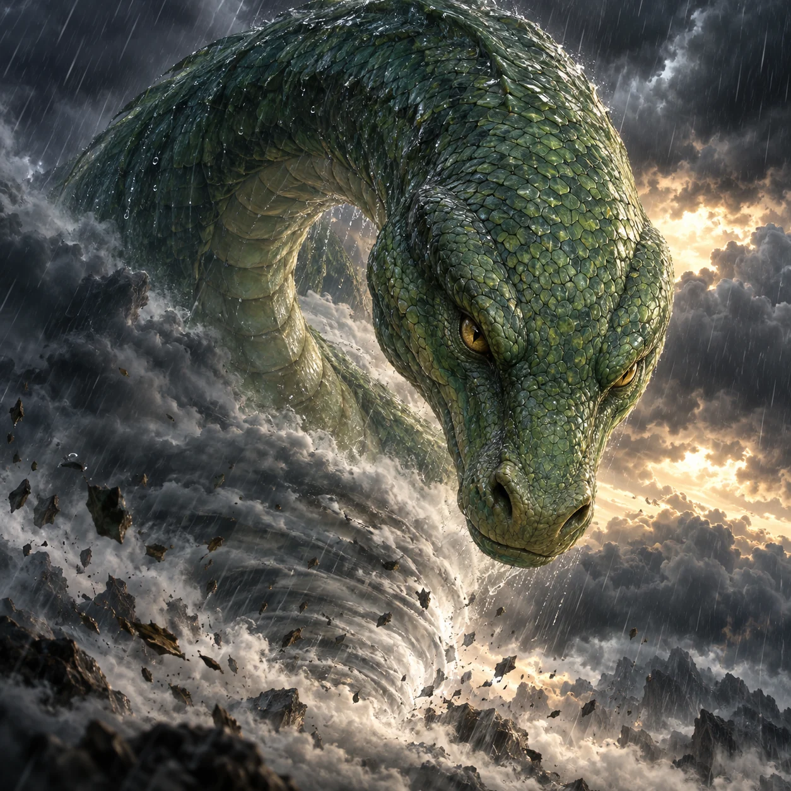
the hornless green qiu definition paired with Huainanzi whirlwind ascent
Aura: A physical whirlwind carries the green qiu upward amid dark clouds and freezing rain, its voice and might shaking the realm; no lightning breath or fire [qiulong-c09]
Audit ciri dan sumber
- [object Object]
- [object Object]
- [object Object]
Native view: single hornless smooth-crowned green dragon head and curling neck, two eyes; lower body obscured in clouds with no invented limb counts. Huge physical whirlwind with rain and debris grounded in c09, green form c08 and hornless definition c05. Direct downward gaze and ascent dominate at200px; no horns, crest or unsourced lightning breath. Seven checks pass.
Review sumberONE original square premium painterly cinematic Mythics illustration of qiulong, the hornless green qiu definition paired with Huainanzi whirlwind ascent.
ANATOMY: One utterly SMOOTH-CROWNED hornless green Chinese dragon head, rounded flattened crown covered in small flush scales ONLY, two natural eyes and a powerful curling scaled neck; absolutely NO HORNS, no antlers, no raised crest, no crest spikes, no head spines, no brow spurs, no whiskers, no mane, no wings; smooth rounded skull silhouette without any projections. Lower body and limbs remain naturally obscured in cloud below the crop; no limb count invented [qiulong-c01, qiulong-c05, qiulong-c08]
MOMENT: Rise forward above a violent whirlwind, hornless head lowering toward viewer while the curling neck emerges from rain and dark cloud
POWER: A physical whirlwind carries the green qiu upward amid dark clouds and freezing rain, its voice and might shaking the realm; no lightning breath or fire [qiulong-c09]
SCALE & CAMERA: extreme low angle; tight frame and foreshortening, distinguishing anatomy clearly visible; the creature dominates 80 percent of the square; never invent colossal size beyond the documented form.
LIGHT & WEATHER: one dominant low warm break in storm cloud, deep shadow, freezing rain and swirling debris; physical particles only where justified by the action.
SURFACE: rough wet dark-green scales and rain-wet hornless face.
SETTING: Sky above Jizhou, rising out of the Huainanzi storm passage [qiulong-c08, qiulong-c09]
MOOD: imposing and awe-inspiring or menacing as appropriate to the documented disposition; never cute, calm or decorative. Living belief beings treated respectfully.
HARD CONSTRAINTS: render ONE native square PNG at least 1024x1024 pixels; no text, lettering, glyphs, logo, border, frame or watermark; no extra heads, limbs or fingers; no design borrowed from any film, game, anime or comic; no nudity or explicit gore; no generic glow aura, neon outline or energy ribbons.
Rep-un-kamuy
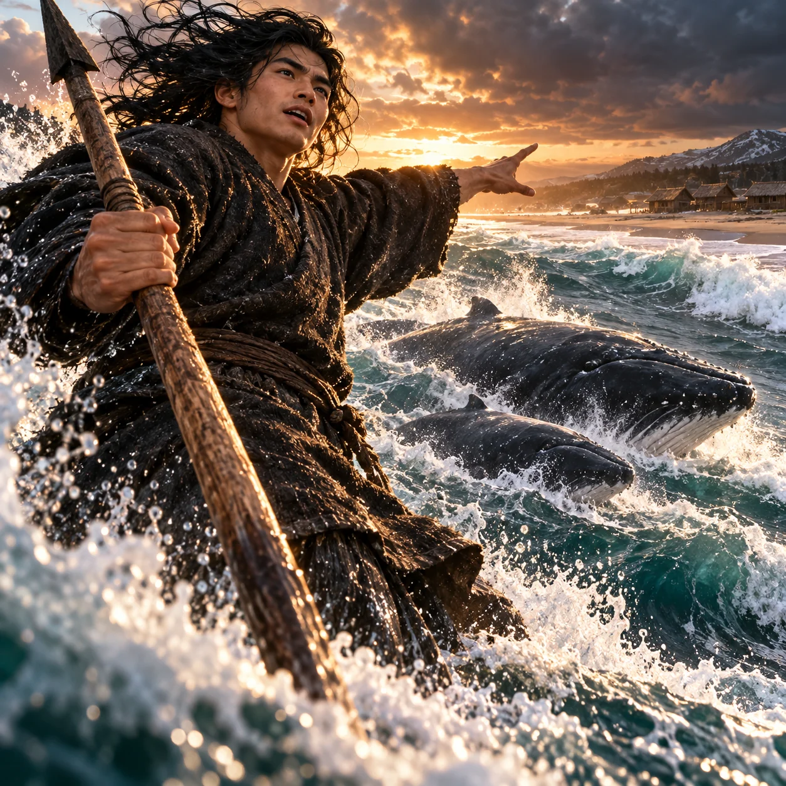
the youthful harpoon-bearing sea kamuy directing marine bounty toward human shore
Aura: Sea bounty c04 portrayed as two intact whales swimming towardhuman shore within heavy breakingsea under oceanlord direction; no gore, levitation orrays. [rep-un-kamuy-c01, rep-un-kamuy-c04, rep-un-kamuy-c05, rep-un-kamuy-c06]
Audit ciri dan sumber
- [object Object]
- [object Object]
- [object Object]
Viewed native1254 and200px. Explicit younghumanharpoon-bearing kamuy c03 infullyopaque robe dominates closeframe, decisivesweepingarm directs ONE adultwhale andONE calf towardhumanbeach c04/c06. Whales remain INSEA with realbreakingwater, no levitation/airbornethrow or wounds. Naturalharpoon/plainwood, humanhead/twoarms/naturalhands, noorca anatomy. Actor visible amidst sea-bounty action andforcefulwave/rimlight, exhilaratedyouthfulsource disposition ratherthan villain.200pxreads kamuy+harpoon+pairedwhales, notordinaryanimalonly. All7Sangar pass.
Review sumberONE original square premium painterly cinematic Mythics illustration of Rep-un-kamuy, the youthful harpoon-bearing sea kamuy directing his marine bounty toward the shore.
ANATOMY: ONE YOUNG adult HUMAN sea deity with ONE head/TWO eyes/TWO arms/FIVE fingers per hand/TWO legs, black windblown hair, fullyOPAQUE coarse dark long robe covering all chest/stomach/hips. ONE long plain unlettered wooden HARPOON, no crown/tattoos/armor or orcaparts. Behind him exactly TWO natural whales in the sea: ONE adult whale and ONE calf, normal cetacean anatomy, intact skin/no blood. [rep-un-kamuy-c03, rep-un-kamuy-c04]
MOMENT: DIRECT the adult whale andcalf toward the human shore in one tremendous sweeping action, youthfulkamuy dominates closeforeground turningtowardviewer with exhilarated commandinglook. Harpoonstaff braced in one HUMAN hand, the other extends authoritatively to shore; BOTH whales remain IN THE SEA behindhim heading toward far emptybeach inside heavy breakingwater. The sea god is unmistakable actor, not an ordinary fisherman.
POWER: The documented sea bounty deed sends a whale andhercalf to human shores. Show TWO intact cetaceans swimming shoreward within strong real tidalwater physicallycurling aroundthe youthfulkamuy, natural sea spray andfallingwater, his outstretchedhand points the direction. NO AIRBORNE whales, levitation, beams orvisiblepuncture/blood/death/gore. Protective oceanlord supplying sea bounty, not malevolence. [rep-un-kamuy-c04, rep-un-kamuy-c05, rep-un-kamuy-c06]
SCALE & CAMERA: extreme low angle; Tight waterlevel lowangle; HUMANkamuy chest/head/hands dominate75percent square, largeharpoon cutsdiagonal, two swimmingwhales clearly visible behindhisbody at correct naturalrelativeadult/calf proportions. No fixedgiantdeityheight.
LIGHT & WEATHER: ONE narrow warm storm-sunset light seam, strong rim light on subject, deep walnut shadows; physical dust/water spray appropriate to the act, never colored magicfog.
SURFACE: richly tactile natural materials: wet skin, coarse opaque cloth, tangled hair/fur, worn wood, dark earth and stone as anatomically appropriate; no plastic.
SETTING: Sea and humanshore near an Ainu village; distant modest uninscribed woodenroofs, no ritualsymbols or named sacredsite. [rep-un-kamuy-c01, rep-un-kamuy-c04, rep-un-kamuy-c07]
MOOD: Reverent overwhelming mythic awe for a living religious tradition. The being must dominate and make the viewer feel like bowing; decisive action, never ordinary animal/human snapshot, cute, static or decorative.
HARD CONSTRAINTS: ONE native square PNG minimum1024x1024; no text/letters/glyphs/logo/frame/border/watermark. No added heads, eyes, arms, legs or fingers; no unsupported horns/wings/chimeraparts. No film/game/anime/comic design. Clothed humanoid torso/hips fullyopaque, no nudity or explicit gore. No generic glow aura/neon/runes/energy ribbons. Source claimIDs never visible text.
Shōkera
Menunggu gambar yang lolos audit
Shuzi
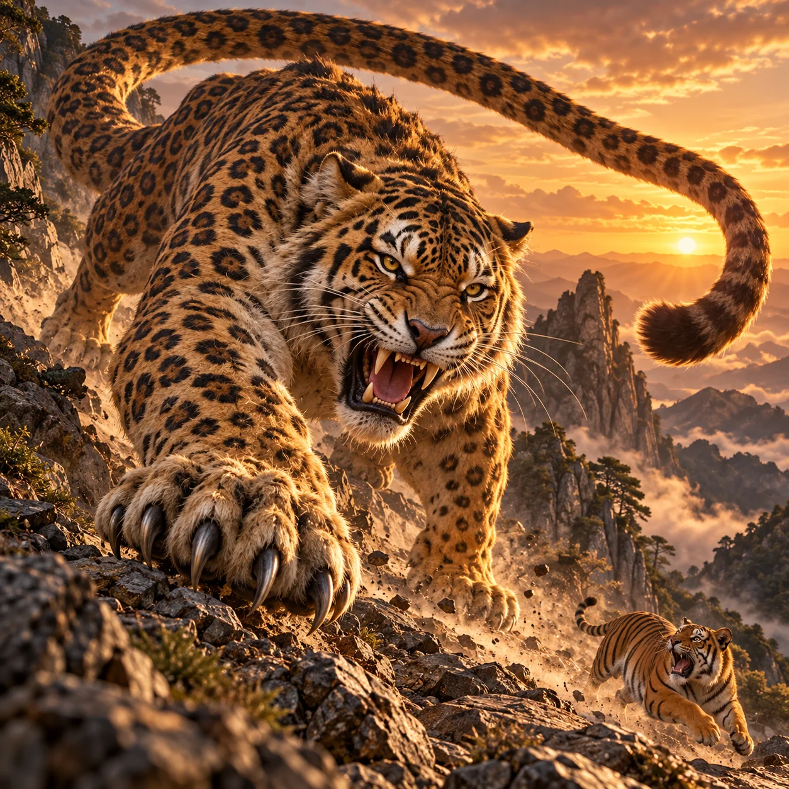
the tiger-shaped leopard-marked long-tailed auspicious beast
Aura: Documented hunting of tigers, shown before contact; no supernatural elemental power or bloody prey [shuzi-c03]
Audit ciri dan sumber
- [object Object]
- [object Object]
- [object Object]
Native view: huge tiger-shaped leopard-marked cat, one head, two eyes, four feline legs with rear limb naturally obscured, single tail visibly much longer than body curving fully above head to its tip c10. Forward charge with open jaws and reaching paw; small fleeing tiger grounds hunt c03 and size. Mountain c07, dust from running only, no elemental effect or gore. Seven Sangar checks yes at native and200px.
Review sumberONE original square premium painterly cinematic Mythics illustration of shuzi, the tiger-shaped leopard-marked long-tailed auspicious beast.
ANATOMY: One huge tiger-like cat with leopard rosette markings, one head, two eyes, four feline legs and one VERY LONG tail longer than the entire body; show entire tail as one continuous broad curve crossing behind and around the cat with its tip visible. No horns, wings or extra tails [shuzi-c01, shuzi-c02, shuzi-c10]
MOMENT: Charge forward off the rocky ridge toward viewer, jaws open and one paw reaching; a small ordinary tiger flees in the far lower corner as size reference
POWER: Documented hunting of tigers, shown before contact; no supernatural elemental power or bloody prey [shuzi-c03]
SCALE & CAMERA: extreme low angle; tight frame and foreshortening, distinguishing anatomy clearly visible; the creature dominates 80 percent of the square; never invent colossal size beyond the documented form.
LIGHT & WEATHER: one dominant late amber sunset shaft, deep rock shadows and dusty rim light; physical particles only where justified by the action.
SURFACE: dense rough spotted feline fur, black nose, natural teeth and claws.
SETTING: Mount Yinglin, with a rocky mountain path [shuzi-c07]
MOOD: imposing and awe-inspiring or menacing as appropriate to the documented disposition; never cute, calm or decorative. Living belief beings treated respectfully.
HARD CONSTRAINTS: render ONE native square PNG at least 1024x1024 pixels; no text, lettering, glyphs, logo, border, frame or watermark; no extra heads, limbs or fingers; no design borrowed from any film, game, anime or comic; no nudity or explicit gore; no generic glow aura, neon outline or energy ribbons.
Skinfaxi
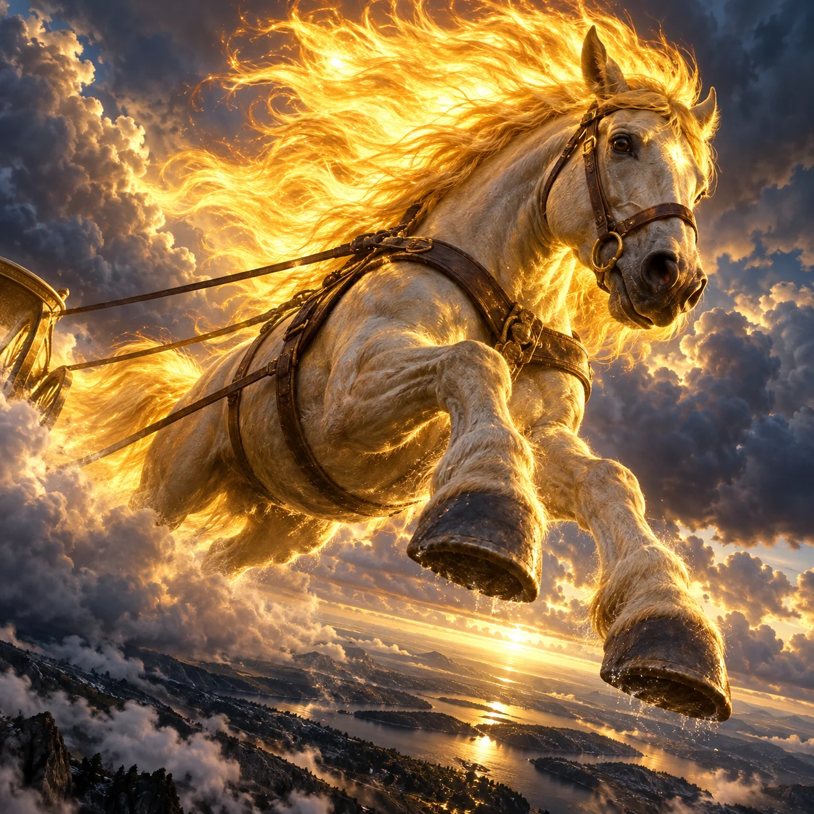
Skinfaxi drawing Day through the sky, gold-shining mane and tail account.
Aura: Awe comes from light shed by the gold-shining mane onto sky and earth (skinfaxi-c01, skinfaxi-c02, skinfaxi-c09).
Audit ciri dan sumber
- [object Object]
- [object Object]
- [object Object]
Viewed native and actual 200px thumbnail. All seven checks pass: horse fills frame with galloping foreshortened hooves, one head and natural two-eye/four-leg anatomy; mane and tail blaze with documented golden illumination across sky and earth. Taut harness/chariot edge present. No wings, horns, text, logos, gore or generic aura. Extraordinary celestial daylight horse remains immediately legible at 200px.
Review sumberONE original square premium painterly cinematic Mythics illustration of Skinfaxi, the Norse horse whose shining mane lights the sky and earth. Native square PNG at least 1024 by 1024 pixels.
ANATOMY: one horse head, two eyes, four hooved legs, no wings or horns; mane and tail shining like gold; simple chariot traces taut behind it, chariot only a small partial edge with no driver visible [skinfaxi-c01, skinfaxi-c02]
MOMENT: SURGE past the low viewer through the sky, forelegs thrust forward in a powerful mid-gallop, neck bent and eye intent
POWER: golden light originates in actual mane and tail hairs, illuminating cloud faces and the dark earth far below; not flame breath or magical ribbons [skinfaxi-c01, skinfaxi-c02, skinfaxi-c09]
SCALE & CAMERA: extreme low angle, tight foreshortened framing; no invented gigantic size
LIGHT & WEATHER: mane itself is the sole dominant golden light, deep twilight cloud shadows, physical airborne droplets
SURFACE: coarse mane strands, short horse coat and worn harness
SETTING: sky traversed by the horse of Day, earth visible beneath [skinfaxi-c01]
MOOD: imposing and awe-inspiring or menacing as appropriate to the documented character; never cute, calm or decorative. The creature itself dominates and remains striking at 200 pixels.
HARD CONSTRAINTS: no text, lettering, glyphs, logo, border, frame or watermark; no extra heads, limbs or fingers; no design borrowed from any film, game, anime or comic; no nudity or explicit gore; no generic glow aura, neon outline, coloured magic mist or energy ribbons. Bracketed claim IDs are instructions, never visible text.
Snallygaster
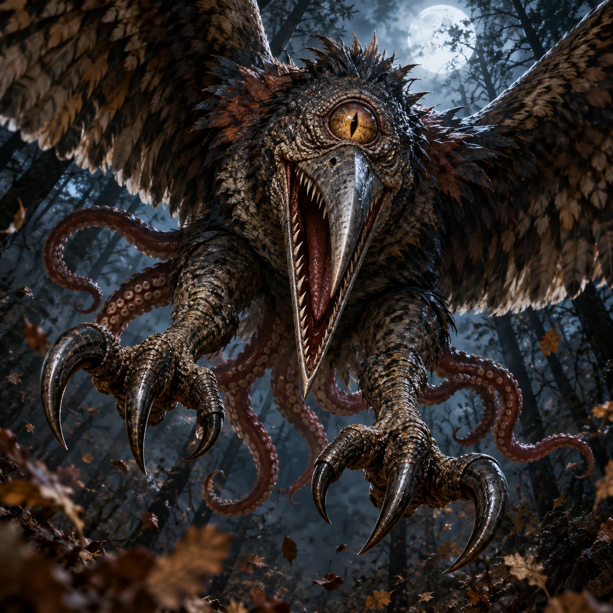
Composite folklore description, central-eye enormous-wing account with metallic toothed beak and reported tentacles.
Aura: Threat comes from the toothed beak, hooked claws and silent swoop (snallygaster-c04, snallygaster-c05, snallygaster-c08).
Audit ciri dan sumber
- [object Object]
- [object Object]
- [object Object]
- [object Object]
- [object Object]
Viewed native and actual 200px. All seven checks pass: huge forward swoop; single central forehead eye; metallic pointed open beak visibly toothed; two immense wings, two hook-clawed legs, distinct octopus tentacles. Maryland woodland clear, no invented power beam, text, symbols or gore. At 200px eye and beak remain strongly threatening.
Review sumberONE original square premium painterly cinematic Mythics illustration of Snallygaster, the Frederick County bird-reptile folklore chimera. Native square PNG at least 1024 by 1024 pixels.
ANATOMY: one reptile-bird head with exactly ONE eye centred high on its forehead and no side eyes; long pointed metallic beak opened enough to expose a row of sharp teeth; one pair enormous wings and two steel-hook-clawed legs; a few octopus-like tentacles distinctly separate from the legs [snallygaster-c04, snallygaster-c07, snallygaster-c08]
MOMENT: SWOOP silently downward straight at the viewer with beak gaping and hook claws reaching, wing tips cropping frame
POWER: no invented supernatural effect; documented silent swooping attack, movement only [snallygaster-c05]
SCALE & CAMERA: extreme low angle, tight foreshortened framing; no invented gigantic size
LIGHT & WEATHER: one cold moon shaft, deep brown forest shadows, wind-stirred leaves
SURFACE: weathered metal-like bill, rough scales, damp feathers and tactile tentacles
SETTING: dark woods of Frederick County Maryland [snallygaster-c11]
MOOD: imposing and awe-inspiring or menacing as appropriate to the documented character; never cute, calm or decorative. The creature itself dominates and remains striking at 200 pixels.
HARD CONSTRAINTS: no text, lettering, glyphs, logo, border, frame or watermark; no extra heads, limbs or fingers; no design borrowed from any film, game, anime or comic; no nudity or explicit gore; no generic glow aura, neon outline, coloured magic mist or energy ribbons. Bracketed claim IDs are instructions, never visible text.
Tangaroa
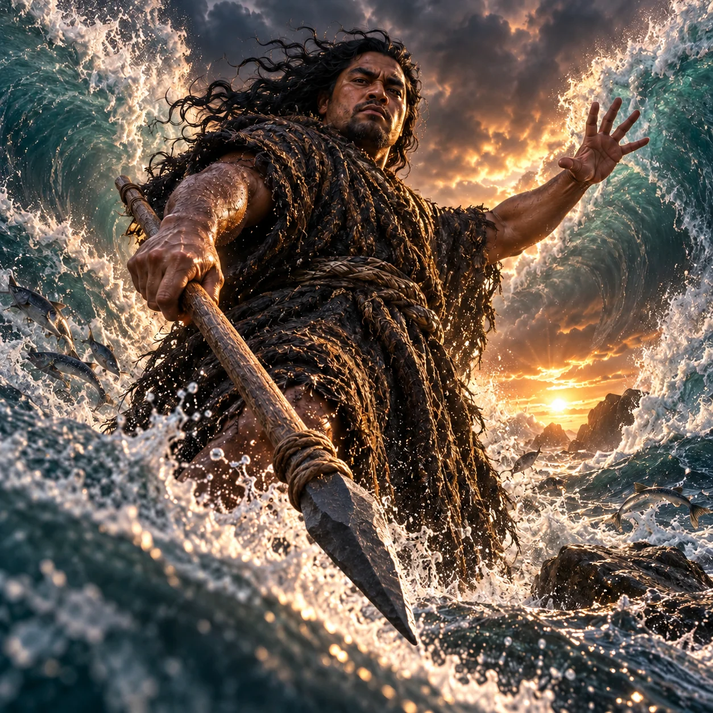
the personified Māori sea atua rising and wielding a spear amid the tide
Aura: Documented tidalcontrol creates TWO physically rising walls ofsea curling inward at his gesture, real massivewaves/spray and flowingfish under sea-domain; spear isdocumented in Shortland battle and risingpersonifiedaction in Dixon. No lightbeams/runes, no victim/spearingwound; sea cannot be merely background. [tangaroa-c01, tangaroa-c02, tangaroa-c14, tangaroa-c16]
Audit ciri dan sumber
- [object Object]
- [object Object]
- [object Object]
Viewed native1254 and200px. Personifiedhuman maleatua c14/c15/c16 infullyopaque coarsedarkrobe dominates lowwaterlevel frame, twist/risingmotion andoutstretchedhuman5fingerhand govern TWO massive realtidalwalls c02 withphysicalfish/spray c01. ONE simple spear c14 now hasclearlyvisible plainstonepoint, editorialmaterial/cord notsourceiconography. No whaleform or ordinaryanimal; seaelement physicallyacts aroundvisibleatua, reverentcommandinggaze/awe200px. No inventedtattoos/crown/runes/aurabeams, no gore/text; all7checks pass. New01 croppedpoint archivedrejected02;oldwhale01+receiptpreserved.
Review sumberEDIT reference Tangaroa Mythics illustration ONLY the spear: keep same male personifiedatua, face/body/5fingerhands, fullyopaque coarse darkrobe, active lowangle pose, real TWO massive tidalwalls/spray/fish andstormsunset, c01/c02/c14/c15/c16. The heldweapon currentlyreads woodenstaff becausepoint cropped: make it clearly ONE SIMPLE SPEAR with ONE plain pointed triangular stonehead tied byplaincord to samewoodenshaft. Reposition the lowerforeground shaft end a littleUP withinframe so its pointedhead is fullyvisible nearbottomcenter, helddiagonally towardthe camera. ONE sharpnon-glowing point only, no trident/ornaments/symbols, no magicaleffect orimpact; spearheadmaterial editorial, sourced spear c14. No change to scene/body, no inventedpower/giantscale, no nudity/transparency/gore. Native squarePNG min1024, no text/logo/frame/watermark/aura/neon orborroweddesign.
Teju Jagua
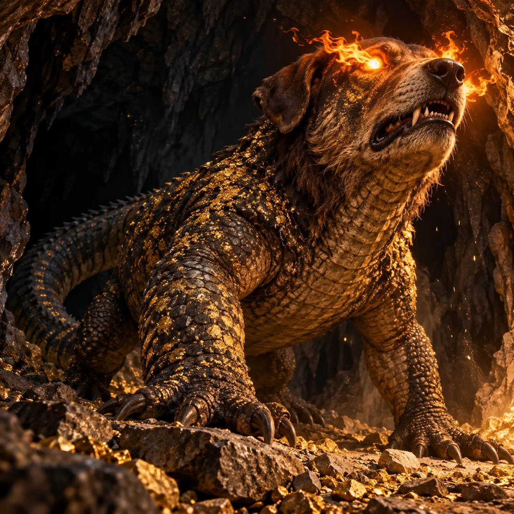
Single dog-headed enormous lizard variant explicitly accepted by teju-jagua-c05/c10, with fiery gaze and gold-dusted skin.
Aura: Awe comes from enormous lizard anatomy and the feared fire-shooting gaze (teju-jagua-c02, teju-jagua-c05, teju-jagua-c10).
Audit ciri dan sumber
- [object Object]
- [object Object]
- [object Object]
- [object Object]
- [object Object]
Native and 200px viewed; seven checks pass. Exactly one clearly canine head on enormous scaled lizard torso, planted forelegs and hindquarters with long curling tail. Gold dust coats scales and real flame originates at eye region, grounded c02/c15. Raised head is a moment respecting limited mobility. Cavern and treasure clear; no extra heads, text, nudity or gore. Low angle remains overwhelming at 200px.
Review sumberONE original square premium painterly cinematic Mythics illustration of Teju Jagua, the enormous Guaraní lizard guardian of caves and treasures, here the documented single-dog-head version. Native square PNG at least 1024 by 1024 pixels.
ANATOMY: exactly ONE huge dog head on an enormous four-legged lizard body with one long lizard tail; two eyes emit actual fire; gold dust and mineral grains lie on scales; no horns, no additional heads [teju-jagua-c05, teju-jagua-c10, teju-jagua-c02, teju-jagua-c15]
MOMENT: LIFT its great dog head out of the cavern while remaining heavily planted on four legs, jaws parting in a warning, not sprinting because mobility is limited
POWER: brief real fire flickers directly from the two eyes and lights the near cave stone; scales shine with gold dust from rolling on treasure [teju-jagua-c02, teju-jagua-c15]
SCALE & CAMERA: extreme low angle inside cavern mouth, huge documented body looming over small rock fragments
LIGHT & WEATHER: eye fire is the dominant warm light, deep cavern blackness, falling dust
SURFACE: rough lizard scales covered with adhered gold dust, coarse dog muzzle fur, dark cave stone
SETTING: cavern abyss of legendary Yaguarón hill, a few unworked gold grains and stones nearby [teju-jagua-c11, teju-jagua-c15]
MOOD: imposing and awe-inspiring or menacing as appropriate to the documented character; never cute, calm or decorative. The creature itself dominates and remains striking at 200 pixels.
HARD CONSTRAINTS: no text, lettering, glyphs, logo, border, frame or watermark; no extra heads, limbs or fingers; no design borrowed from any film, game, anime or comic; no nudity or explicit gore; no generic glow aura, neon outline, coloured magic mist or energy ribbons. Bracketed claim IDs are instructions, never visible text.
Tenghuang
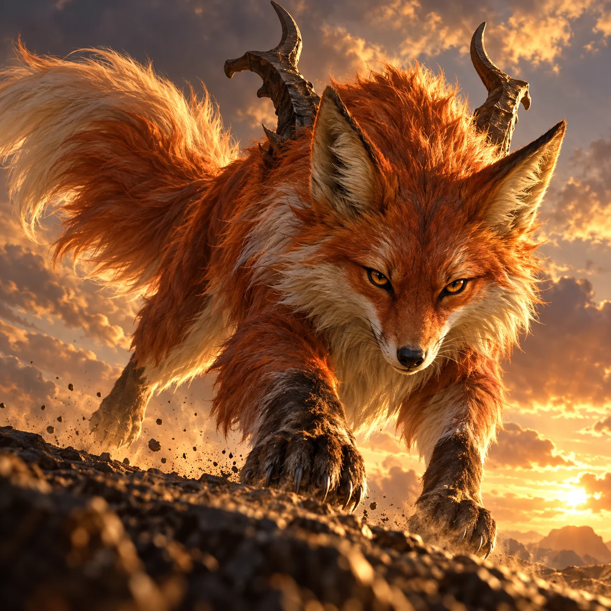
Shanhaijing Chenghuang foxlike back-horned form, without wings or horse-body mixture.
Aura: Auspicious awe comes from startling back-horned fox anatomy and forceful close framing (tenghuang-c06); no invented magic.
Audit ciri dan sumber
- [object Object]
- [object Object]
Viewed native and 200px; seven checks pass. One fox head, two eyes, four pawed legs (far hind partially occluded), one sweeping tail. Two horns rise behind ears from dorsal shoulder/back fur, distinct from unhorned forehead; no wings. Forward spring with displaced ordinary soil, no longevity energy effect. At 200px strange back-horned fox dominates and remains imposing; no text or gore.
Review sumberONE original square premium painterly cinematic Mythics illustration of Tenghuang, the auspicious Chenghuang foxlike beast of the Shanhaijing account. Native square PNG at least 1024 by 1024 pixels.
ANATOMY: a foxlike animal, one head, two eyes, four paws and one fox tail; horns grow unmistakably from the BACK behind shoulders, not forehead; no wings because this selected primary-text variant does not mention wings [tenghuang-c06]
MOMENT: SPRING forward over a low foreground ridge, forepaws extended toward viewer, back horns sharply silhouetted above its spine, alert and commanding
POWER: no visible invented magic; longevity of a rider is not shown as an energy effect [tenghuang-c06]
SCALE & CAMERA: extreme low angle, tight foreshortened framing; no invented gigantic size
LIGHT & WEATHER: a single slanting warm sunset shaft, deep walnut shadows, strong rim light
SURFACE: dense wind-ruffled fox fur, matte keratin horns, dusty ground
SETTING: earth beneath the creature in land of Bai-min; terrain kept indistinct because source supplies no specific landscape [tenghuang-c06]
MOOD: imposing and awe-inspiring or menacing as appropriate to the documented character; never cute, calm or decorative. The creature itself dominates and remains striking at 200 pixels.
HARD CONSTRAINTS: no text, lettering, glyphs, logo, border, frame or watermark; no extra heads, limbs or fingers; no design borrowed from any film, game, anime or comic; no nudity or explicit gore; no generic glow aura, neon outline, coloured magic mist or energy ribbons. Bracketed claim IDs are instructions, never visible text.
Tepegöz
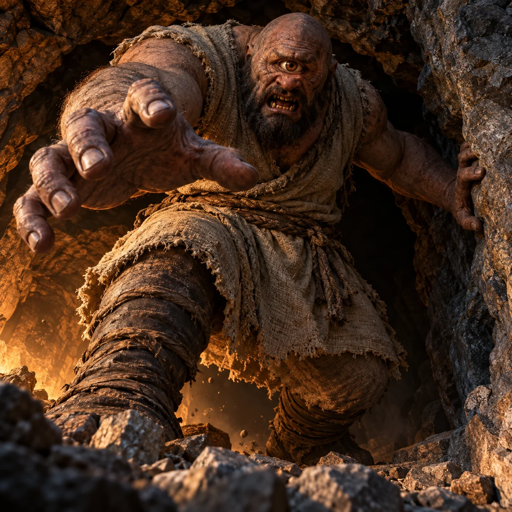
Adult single-forehead-eyed giant ogre before the blinding episode.
Aura: Threat comes from the giant cave ogre and single staring eye with tough skin (tepegoz-c01, tepegoz-c05, tepegoz-c06).
Audit ciri dan sumber
- [object Object]
- [object Object]
- [object Object]
Native and 200px inspected, all seven checks pass. One head, exactly one central forehead eye; two arms with five-digit reaching near hand and bracing far hand; two clothed legs. Tough skin and opaque coarse garment, cave lunge and direct looming confrontation. No eye beam, horns, text, nudity or gore. At thumbnail the reaching giant and single eye remain threatening.
Review sumberONE original square premium painterly cinematic Mythics illustration of Tepegöz, the one-eyed giant ogre of the Oghuz Book of Dede Korkut. Native square PNG at least 1024 by 1024 pixels.
ANATOMY: one head with exactly ONE eye in forehead, no normal pair of eyes below; humanlike body with two arms and two legs; visibly tough leathery skin; torso and pelvis fully covered by heavy opaque undyed cloth, no helmet or horns [tepegoz-c01, tepegoz-c05, tepegoz-c06]
MOMENT: LUNGE out of his cave, one empty hand reaching toward the viewer and the other braced on cave wall, single eye fixed on us
POWER: no invented magical effect; hard skin shown through dense rough surface only [tepegoz-c06]
SCALE & CAMERA: extreme low angle at cave floor, giant looms over small cave stones
LIGHT & WEATHER: single low dying fire outside frame lighting cave doorway, dust without magical smoke
SURFACE: hard leathery skin, heavy coarse cloth, damp rock
SETTING: his rocky cave lair [tepegoz-c05]
MOOD: imposing and awe-inspiring or menacing as appropriate to the documented character; never cute, calm or decorative. The creature itself dominates and remains striking at 200 pixels.
HARD CONSTRAINTS: no text, lettering, glyphs, logo, border, frame or watermark; no extra heads, limbs or fingers; no design borrowed from any film, game, anime or comic; no nudity or explicit gore; no generic glow aura, neon outline, coloured magic mist or energy ribbons. Bracketed claim IDs are instructions, never visible text.
Tulevieja
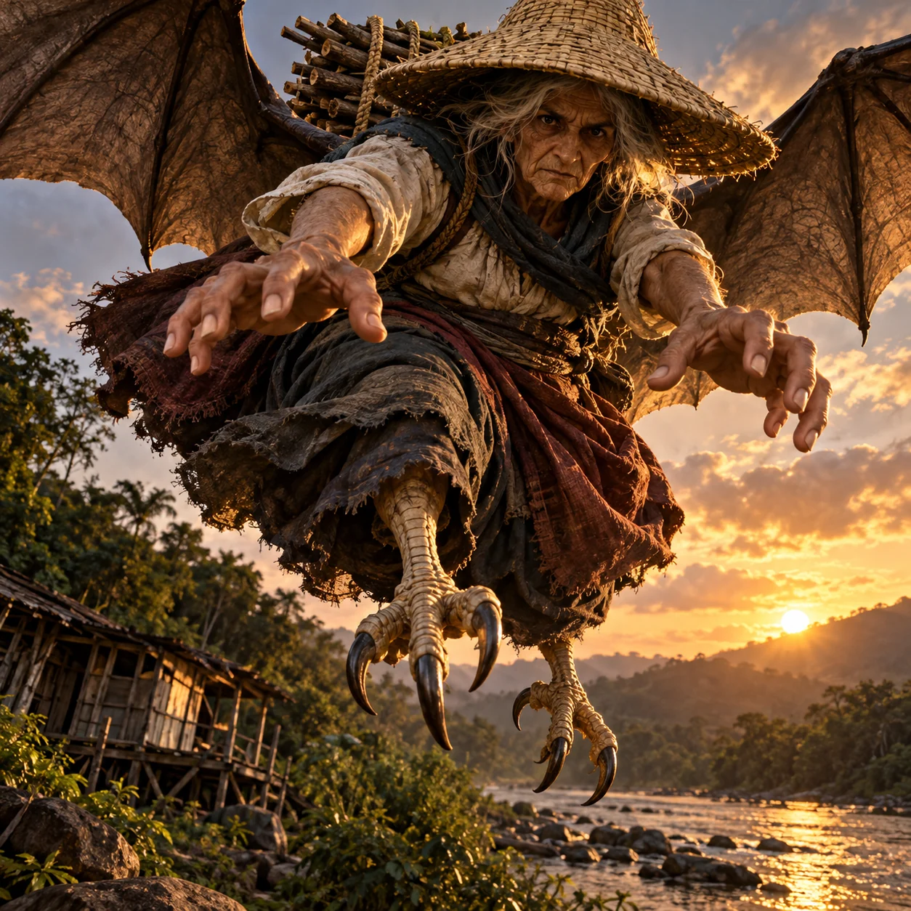
MINED Costa Rican bat-winged, hawk-legged old woman account, modestly clothed editorially.
Aura: Threat comes from the bird talons and sudden descending flight (tulevieja-c03, tulevieja-c08, tulevieja-c09).
Audit ciri dan sumber
- [object Object]
- [object Object]
- [object Object]
- [object Object]
Native and actual 200px viewed; seven checks pass after retry. Two ordinary five-digit human hands with short nails; hawk claws only on two bird feet. One aged woman head, broad tule hat, two bat wings, visible firewood bundle, opaque blouse/skirt. Descending flight over river and shack remains threatening at 200px. No text, invented aura, nudity or gore. Attempt1 archived for incorrect clawed hands.
Review sumberONE original square premium painterly cinematic Mythics illustration of Tulevieja, the Costa Rican and Panamanian winged ghost woman with a tule hat. Native square PNG at least 1024 by 1024 pixels.
ANATOMY: one aged witchlike woman head beneath broad tule hat, two eyes, two human arms ending in ordinary HUMAN hands, each exactly five human fingers including thumb, SHORT pale natural fingernails, absolutely NO talons or claws on hands; exactly two hawk legs with talons, exactly two bat wings; torso entirely covered by opaque worn blouse and heavy wrapped skirt with lower bird legs visible; a tied bundle of firewood on her back [tulevieja-c01, tulevieja-c03, tulevieja-c07, tulevieja-c08]
MOMENT: DROP from a low flight toward the viewer, wings thrust outward and both hawk talons brought forward, old face intent beneath the clear broad hat
POWER: documented flight only; no glowing aura or invented spell [tulevieja-c09]
SCALE & CAMERA: extreme low angle, tight foreshortened framing; no invented gigantic size
LIGHT & WEATHER: a single slanting warm sunset shaft, deep walnut shadows, strong rim light
SURFACE: coarse woven tule hat, aged skin, leathery bat wings, hawk scales and worn cloth
SETTING: near the Virilla river and her dilapidated shack, glimpsed behind rather than dominating [tulevieja-c07]
MOOD: imposing and awe-inspiring or menacing as appropriate to the documented character; never cute, calm or decorative. The creature itself dominates and remains striking at 200 pixels.
HARD CONSTRAINTS: no text, lettering, glyphs, logo, border, frame or watermark; no extra heads, limbs or fingers; no design borrowed from any film, game, anime or comic; no nudity or explicit gore; no generic glow aura, neon outline, coloured magic mist or energy ribbons. Bracketed claim IDs are instructions, never visible text.
CORRECTION: hawk talons only on the two FEET. Hands are human five-digit hands with short fingernails, never long black hooked nails. Keep face, hat, bat wings, opaque clothing, firewood and descending river flight.
Scultone
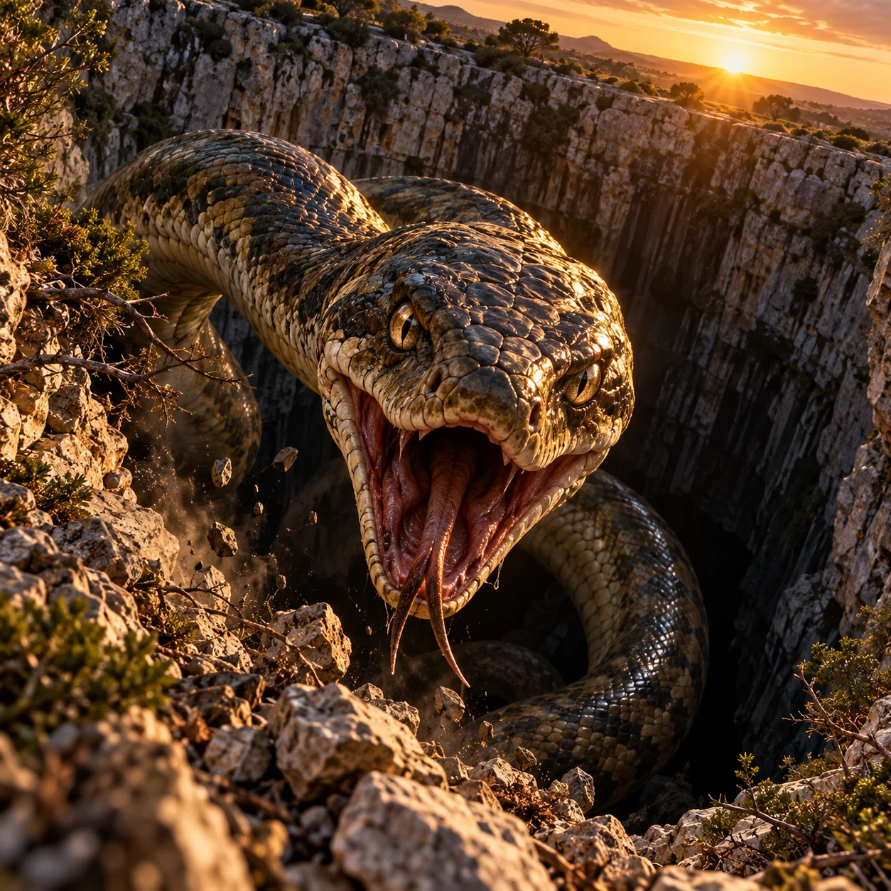
Su Sterru serpent account rather than the modern comic basilisk.
Aura: Danger comes from lethal direct gaze and serpent emerging from its chasm (u-scultone-c02, u-scultone-c08, u-scultone-c09).
Audit ciri dan sumber
- [object Object]
- [object Object]
- [object Object]
Native and200px viewed; all seven checks pass. One serpent head/two eyes, single continuous limbless coiled scaled body emerging from deep Golgo chasm. Strong forward open-jaw lunge, real dislodged gravel only. Deadly gaze expressed by stare, no eye ray or petrification. No modern comic basilisk design, added limbs, horns, text or gore. At 200px head and threatening action dominant.
Review sumberONE original square premium painterly cinematic Mythics illustration of Scultone, the serpent-like reptilian Scultone of the Sardinian Golgo chasm legend. Native square PNG at least 1024 by 1024 pixels.
ANATOMY: one large reptilian serpent head with two eyes and a long limbless coiling serpent body; no invented wings, horns or legs; jaws parted [u-scultone-c01, u-scultone-c05, u-scultone-c08]
MOMENT: THRUST its head toward the viewer from the black mouth of the chasm, muscular coil gripping near rocks
POWER: no visible eye beam: the deadly gaze is expressed by direct stare alone; gravel dislodges through body movement only [u-scultone-c02, u-scultone-c09]
SCALE & CAMERA: extreme low angle, tight foreshortened framing; no invented gigantic size
LIGHT & WEATHER: a single slanting warm sunset shaft, deep walnut shadows, strong rim light
SURFACE: wet overlapping serpent scales, broken limestone and shrub twigs
SETTING: Su Sterru chasm on the Golgo plateau, sparse shrub edges [u-scultone-c04, u-scultone-c08]
MOOD: imposing and awe-inspiring or menacing as appropriate to the documented character; never cute, calm or decorative. The creature itself dominates and remains striking at 200 pixels.
HARD CONSTRAINTS: no text, lettering, glyphs, logo, border, frame or watermark; no extra heads, limbs or fingers; no design borrowed from any film, game, anime or comic; no nudity or explicit gore; no generic glow aura, neon outline, coloured magic mist or energy ribbons. Bracketed claim IDs are instructions, never visible text.
白竜
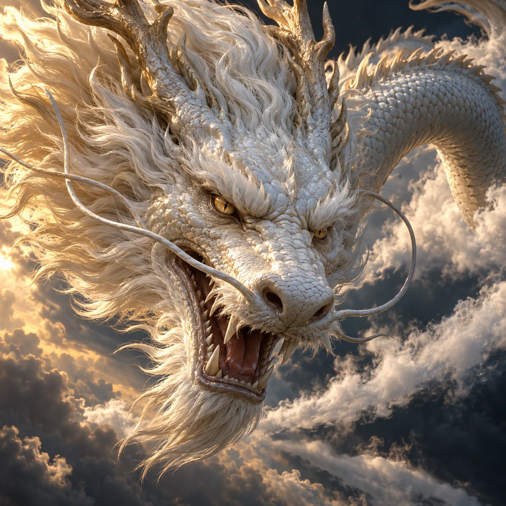
Chinese celestial emperor servant dragon in fast flight
Aura: SWOOP rapidly down past the low viewer, head thrust forward and neck whipped into a vigorous airborne curve; white mane and whiskers stream backward. Supported by wd-q11244093-c01, wd-q11244093-c02, wd-q11244093-c02, wd-q11244093-c02.
Audit ciri dan sumber
- [object Object]
- [object Object]
- [object Object]
Native and 200px inspected: WHITE living Chinese dragon face and coiling airborne neck fill frame during fast descending flight; eyes, whiskers, mane and open dragon jaws immediately identify creature, replacing abstract waterspout. Flight c02 and dragon identity c01 supply depiction; only cloud-vapor displacement, no weather-control power or novel gold effect. Conventional antler/mane/whisker physiognomy is explicitly editorial category rendering, not sourced exact iconography. Limbs outside crop, one head/two eyes, no text/wings/glow/gore/adaptation. All seven Sangar checks pass.
Review sumberONE original square premium painterly cinematic Mythics illustration of White Dragon, Chinese celestial emperor servant dragon in fast flight. Native square PNG at least1024x1024.
ANATOMY: ONE living WHITE CHINESE DRAGON, one head/two eyes and one continuous coiling scaled neck/body. Clearly dragon physiognomy: broad raised muzzle, strong ridged brow, long whiskers, coarse beard/mane, two antlerlike horns as conventional editorial dragon-category rendering, not claim-specific horn count. Limbs and tail end outside close crop. No wings. [wd-q11244093-c01, wd-q11244093-c02]
MOMENT: SWOOP rapidly down past the low viewer, head thrust forward and neck whipped into a vigorous airborne curve; white mane and whiskers stream backward.
POWER: Fast flight physically displaces cloud vapor beside the neck; no controlled storms, waterspout, golden breath or novel powers. [wd-q11244093-c02]
SCALE & CAMERA: Extreme low close confrontation; head/being fills most frame, distinguishing dragon face visible at200px; no undocumented gigantic body comparisons.
LIGHT & WEATHER: One narrow warm sidelight against deep walnut shadows, hard rim, dark high contrast; physical water or dust only from documented scene.
SURFACE: Living wet scales, coarse mane hairs, rain-wet opaque cloth when clothed, weathered stone or ordinary soil. Never plastic or glazed ornament.
SETTING: High open sky crossed by cloud vapor, background minimal because dragon dominates. [wd-q11244093-c02]
MOOD: Reverent overwhelming dragon awe, commanding and imposing, never cute, calm, decorative or ordinary snake.
HARD CONSTRAINTS: No text, lettering, glyphs, logo, border, frame or watermark. No extra heads, eyes, limbs, fingers. No film/game/anime/comic designs, no nudity or explicit gore, no generic glow aura, neon outlines, floating runes or energy ribbons. All clothing fully opaque. Conventional Chinese dragon rendering details are artistic interpretation of documented dragon identity, not new physical powers or claimed exact iconography.
Fuxi (負屓)
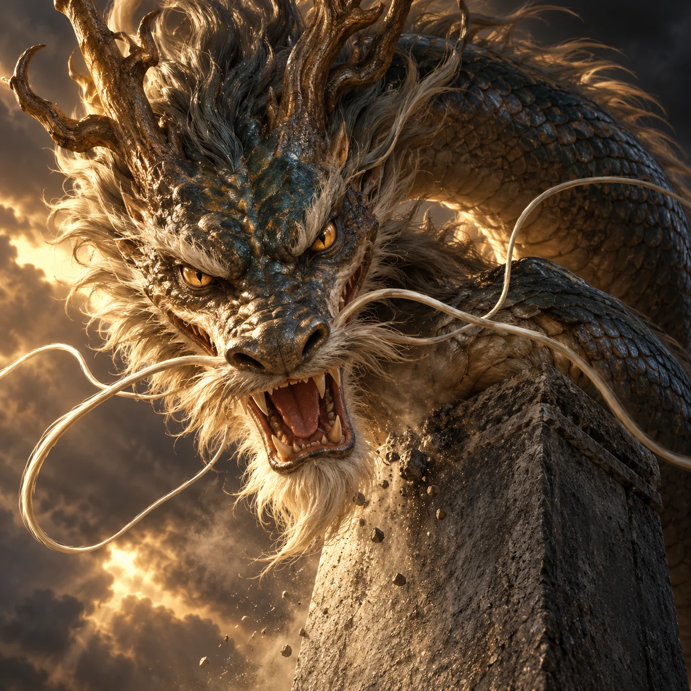
living dragon-shaped literary offspring coiling around a stone stele
Aura: UNCOIL and BEND its fierce alert head down toward low viewer, neck rubbing the stele edge; mouth opening in a powerful exhale, whiskers thrown forward. Supported by wd-q757989-c02, wd-q757989-c07, wd-q757989-c02, wd-q757989-c02.
Audit ciri dan sumber
- [object Object]
- [object Object]
- [object Object]
Native and 200px inspected: undeniable LIVING Chinese dragon head with two eyes and coiling neck/body wraps stele TOP, uncoils toward viewer with open jaws and moving whiskers. Stele is rough plain stone with no inscription, contact dust only; no magical literary effect. Conventional branched antler pair, mane and whiskers are explicitly editorial interpretation of dragon-shaped category c07, not facts asserted by source. One head, limbs cropped, no snake silhouette/stone ornament/text/glow/adaptation. All seven Sangar checks pass; correction directly addresses ordinary snake rejection.
Review sumberONE original square premium painterly cinematic Mythics illustration of Fuxi (負屓), living dragon-shaped literary offspring coiling around a stone stele. Native square PNG at least1024x1024.
ANATOMY: ONE living Chinese dragon-shaped creature, one head/two eyes and a long neck/body COILED around the TOP of a plain stone stele. Proud broad dragon muzzle, ridged brow, long whiskers, bristling beard and two antlerlike horns are conventional editorial rendering of dragon shape, not sourced anatomical counts. Limbs cropped outside frame. Not snake/turtle/petrified ornament. [wd-q757989-c02, wd-q757989-c07]
MOMENT: UNCOIL and BEND its fierce alert head down toward low viewer, neck rubbing the stele edge; mouth opening in a powerful exhale, whiskers thrown forward.
POWER: No documented magical power. Dust shakes from stone where living coil physically contacts its edge; no magical writing or energy. [wd-q757989-c02]
SCALE & CAMERA: Extreme low close confrontation; head/being fills most frame, distinguishing dragon face visible at200px; no undocumented gigantic body comparisons.
LIGHT & WEATHER: One narrow warm sidelight against deep walnut shadows, hard rim, dark high contrast; physical water or dust only from documented scene.
SURFACE: Living wet scales, coarse mane hairs, rain-wet opaque cloth when clothed, weathered stone or ordinary soil. Never plastic or glazed ornament.
SETTING: TOP edge of weathered plain stone stele, blank face without inscriptions. [wd-q757989-c02]
MOOD: Reverent overwhelming dragon awe, commanding and imposing, never cute, calm, decorative or ordinary snake.
HARD CONSTRAINTS: No text, lettering, glyphs, logo, border, frame or watermark. No extra heads, eyes, limbs, fingers. No film/game/anime/comic designs, no nudity or explicit gore, no generic glow aura, neon outlines, floating runes or energy ribbons. All clothing fully opaque. Conventional Chinese dragon rendering details are artistic interpretation of documented dragon identity, not new physical powers or claimed exact iconography.
吉光
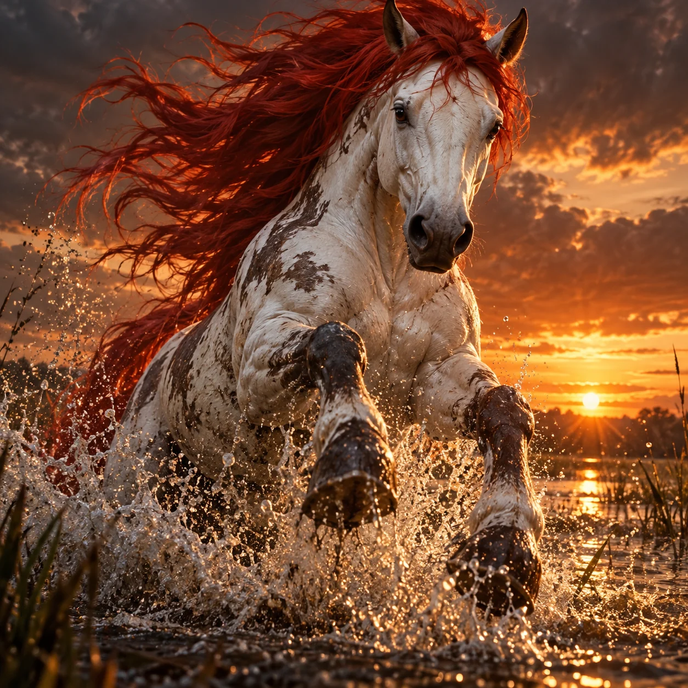
Patterned white, red-maned marsh horse form; not yellow Tenghuang alias.
Aura: Awe comes from the unusual patterned white coat and scarlet mane in vigorous marsh emergence (wd-q9602528-c02, wd-q9602528-c05).
Audit ciri dan sumber
- [object Object]
- [object Object]
Native and200px inspected; seven checks pass. Patterned white horse with striking red mane, one natural horse head/two eyes, foreshortened forelegs and hindquarters consistent with four-legged body. Bursts from marsh in real splashes, tail partly obscured. Red mane remains unmistakeable at200px; no yellow-horse conflation, horns, wings, text, magical glow or gore.
Review sumberONE original square premium painterly cinematic Mythics illustration of 吉光, Jiguang, the auspicious patterned white horse with a red mane. Native square PNG at least 1024 by 1024 pixels.
ANATOMY: one horse head, two eyes, four hooved legs, one tail; white body with dark natural irregular coat patterning, rich RED mane in real hair strands, no horns, wings or jewellery [wd-q9602528-c02, wd-q9602528-c05]
MOMENT: BURST forward from marsh water, forelegs thrusting up toward viewer and red mane whipped backward, intent gaze, commanding auspicious presence
POWER: no documented visual magic: only physical water splashes from motion; longevity and fireproof coat story are not converted into powers [wd-q9602528-c02, wd-q9602528-c05]
SCALE & CAMERA: extreme low angle, tight foreshortened framing; no invented gigantic size
LIGHT & WEATHER: single low amber sunset shaft, deep marsh shadows, heavy physical splashes
SURFACE: wet white horse hair, rich red mane strands, dark marsh water
SETTING: great marsh from which this horse is born, reeds at margins only [wd-q9602528-c02]
MOOD: imposing and awe-inspiring or menacing as appropriate to the documented character; never cute, calm or decorative. The creature itself dominates and remains striking at 200 pixels.
HARD CONSTRAINTS: no text, lettering, glyphs, logo, border, frame or watermark; no extra heads, limbs or fingers; no design borrowed from any film, game, anime or comic; no nudity or explicit gore; no generic glow aura, neon outline, coloured magic mist or energy ribbons. Bracketed claim IDs are instructions, never visible text.
Xiaotian Quan
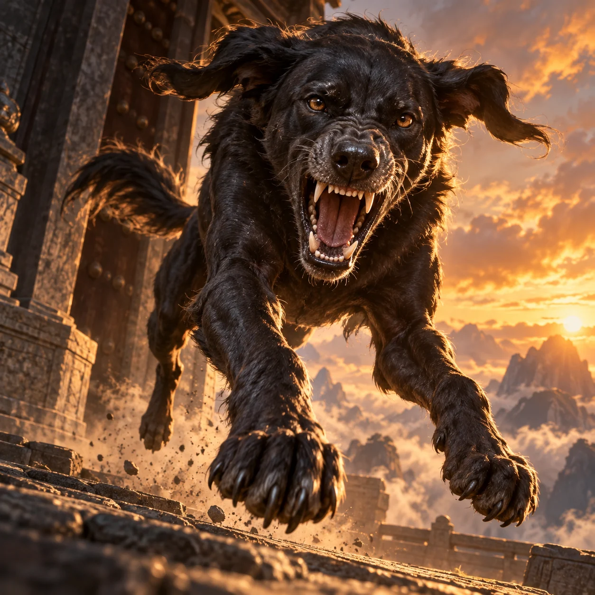
Loyal black thin celestial hunting dog, not the wicked-woman variant.
Aura: Awe comes from the loyal dog violent forward movement and documented battle bite/howl (xiaotian-quan-c01, xiaotian-quan-c02).
Audit ciri dan sumber
- [object Object]
- [object Object]
- [object Object]
- [object Object]
Viewed native and200px; seven checks pass. One black canine head with two eyes, four natural limbs and one tail (far hind leg largely occluded), dynamic leap/bark. Thin hindlimb and hunting-dog silhouette, perspective enlarges head/forepaws. Unlettered heavenly gate edge shows guardian context. No horns, wings, glow, soundrings, gore or text. Fierce loyal guardian remains dominant at200px.
Review sumberONE original square premium painterly cinematic Mythics illustration of Xiaotian Quan, the black celestial dog accompanying Erlang Shen, using its powerful bite and howl. Native square PNG at least 1024 by 1024 pixels.
ANATOMY: one BLACK thin hunting dog with one head, two eyes, four legs and one tail, natural canine muzzle and teeth, no wings, horns, armour or anthropomorphic body [xiaotian-quan-c01, xiaotian-quan-c02, xiaotian-quan-c11]
MOMENT: LEAP forward snarling in a forceful bark at the viewer, forepaws reaching and hindquarters propelling, loyal celestial guardian rather than evil beast
POWER: documented powerful bite and howl expressed in open jaws and air from barking; no visual sound rings or invented magic [xiaotian-quan-c02]
SCALE & CAMERA: extreme low angle, tight foreshortened framing; no invented gigantic size
LIGHT & WEATHER: a single slanting warm sunset shaft, deep walnut shadows, strong rim light
SURFACE: coarse black fur, sinewy limbs, wet black nose and stone gate
SETTING: near the Southern Heavenly Gate of the loyal-dog legend, only a dark unlettered gate edge seen [xiaotian-quan-c08]
MOOD: imposing and awe-inspiring or menacing as appropriate to the documented character; never cute, calm or decorative. The creature itself dominates and remains striking at 200 pixels.
HARD CONSTRAINTS: no text, lettering, glyphs, logo, border, frame or watermark; no extra heads, limbs or fingers; no design borrowed from any film, game, anime or comic; no nudity or explicit gore; no generic glow aura, neon outline, coloured magic mist or energy ribbons. Bracketed claim IDs are instructions, never visible text.
Xolotl
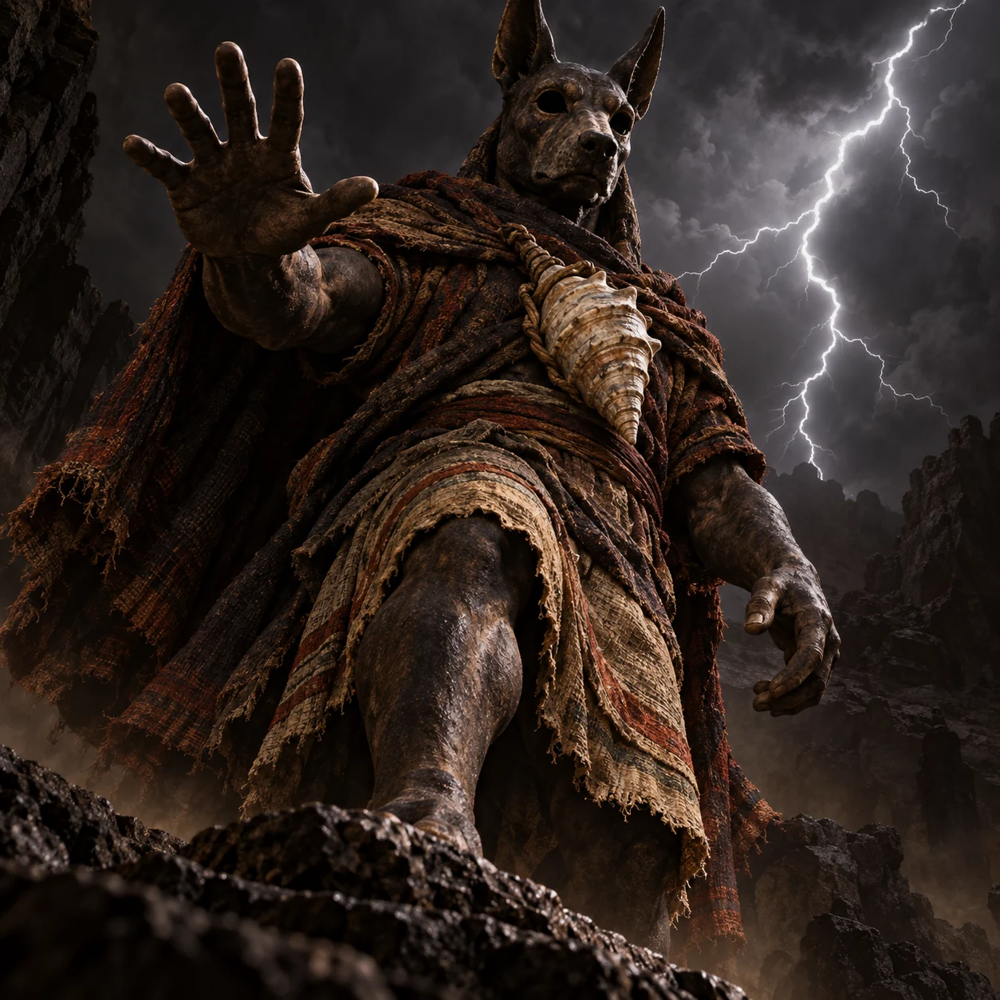
Dog-headed psychopomp with empty eye sockets and conch wind jewel.
Aura: Awe comes from lightning domain and dog-headed psychopomp protecting the sun (xolotl-c01, xolotl-c05, xolotl-c08).
Audit ciri dan sumber
- [object Object]
- [object Object]
- [object Object]
- [object Object]
- [object Object]
Native and200px viewed; seven checks pass. Single canine head with TWO plainly empty dark eye sockets, no pupil glow. Human two-arm/two-leg body with five-digit raised hand, fully opaque mantle/wrap, large clear conch-shaped wind jewel. Striding command into frame; real lightning c01 in underworld route. At200px head, sockets and shell still distinct and awe-inspiring. No glyphs, text, nudity, gore or borrowed adaptation.
Review sumberONE original square premium painterly cinematic Mythics illustration of Xolotl, the Mexica dog-headed deity who protects the sun in its underworld journey. Native square PNG at least 1024 by 1024 pixels.
ANATOMY: one dog head on a male human body, two arms, two legs; two EMPTY eye sockets clearly dark and unoccupied, not glowing eyes; a large conch-like twisted wind jewel on the chest; fully opaque heavy mantle and knee-length wrapped garment cover torso and pelvis, no glyphs [xolotl-c01, xolotl-c05, xolotl-c06]
MOMENT: STRIDE upward from the dark underworld toward the viewer, one hand held open in protective command and the other drawn forward, conch jewel and dog head prominent
POWER: one fork of real lightning lights the surrounding darkness, grounded in lightning deity domain; no rays from sockets or jewel [xolotl-c01]
SCALE & CAMERA: extreme low angle, tight foreshortened framing; no invented gigantic size
LIGHT & WEATHER: one real distant lightning fork is sole dominant light, deep walnut darkness and dusty air
SURFACE: matte dark canine skin, rough cloth, large ridged conch shell and underworld rock
SETTING: dark threshold of Mictlan, the underworld route he guides, no invented temples or living victims [xolotl-c08]
MOOD: imposing and awe-inspiring or menacing as appropriate to the documented character; never cute, calm or decorative. The creature itself dominates and remains striking at 200 pixels.
HARD CONSTRAINTS: no text, lettering, glyphs, logo, border, frame or watermark; no extra heads, limbs or fingers; no design borrowed from any film, game, anime or comic; no nudity or explicit gore; no generic glow aura, neon outline, coloured magic mist or energy ribbons. Bracketed claim IDs are instructions, never visible text.
Yara-ma-yha-who
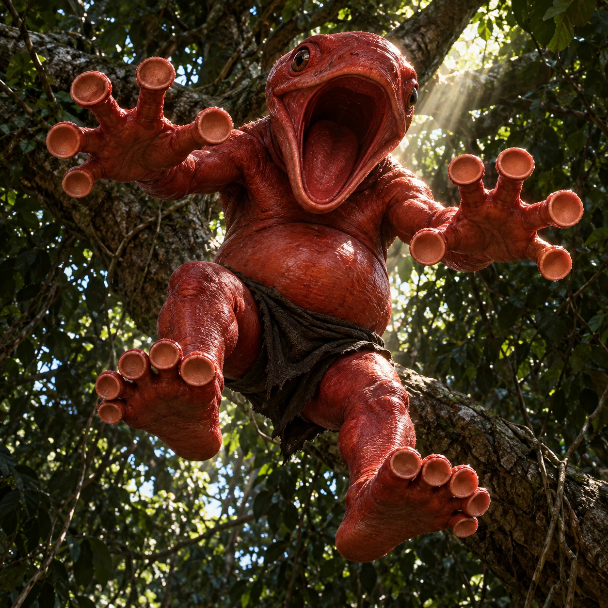
Four-foot red toothless snake-headed humanoid with hand and foot suckers, daytime fig-tree ambush.
Aura: Threat comes from oversized toothless swallowing mouth and octopus-like fingertip/toe suckers in descending ambush (yara-ma-yha-who-c04, yara-ma-yha-who-c05, yara-ma-yha-who-c15).
Audit ciri dan sumber
- [object Object]
- [object Object]
- [object Object]
- [object Object]
Native and actual200px viewed; seven checks pass after retry. One red snake-like head, exactly two eyes, huge mouth without teeth, prominent belly, two arms/two legs. Each hand now has five cup-tipped fingers; each foot visibly five toe cups. Descending wild-fig ambush in shaded DAYLIGHT, opaque waist wrap. At200px swallowing mouth and reaching suction cups remain threatening. No night, glyphs, text, gore or invented magic.
Review sumberONE original square premium painterly cinematic Mythics illustration of Yara-ma-yha-who, the red, toothless tree-dwelling monster recounted in Southeastern Australian Aboriginal lore. Native square PNG at least 1024 by 1024 pixels.
ANATOMY: one red humanoid figure about four feet tall, snake-like oversized head, huge toothless mouth, large protruding belly, two arms and two short legs; all five fingers on each hand and all five toes on each foot end in cup-shaped suckers; two eyes, no teeth, horns or wings; fully opaque plain dark waist wrap [yara-ma-yha-who-c04, yara-ma-yha-who-c05]
MOMENT: DROP from a low wild-fig branch toward the close viewer in an ambush, hands thrust forward so every sucker fingertip is readable, mouth opening snake-wide
POWER: no invented magic or blood effects; documented dropping ambush and sucker anatomy only [yara-ma-yha-who-c06, yara-ma-yha-who-c15]
SCALE & CAMERA: extreme low angle, tight foreshortened framing; no invented gigantic size
LIGHT & WEATHER: single angled daytime sun shaft through dense canopy, deep warm leafy shadows
SURFACE: matte red skin, cup-shaped sucker fingertips, rough fig bark and leaves
SETTING: dense leafy wild fig tree during DAYLIGHT, canopy shaded with a single sun shaft, never night [yara-ma-yha-who-c02, yara-ma-yha-who-c06, yara-ma-yha-who-c12]
MOOD: imposing and awe-inspiring or menacing as appropriate to the documented character; never cute, calm or decorative. The creature itself dominates and remains striking at 200 pixels.
HARD CONSTRAINTS: no text, lettering, glyphs, logo, border, frame or watermark; no extra heads, limbs or fingers; no design borrowed from any film, game, anime or comic; no nudity or explicit gore; no generic glow aura, neon outline, coloured magic mist or energy ribbons. Bracketed claim IDs are instructions, never visible text.
CORRECTION: Each foot must visibly have exactly FIVE sucker-tipped toes, including a distinct inner big toe; each hand remains exactly FIVE sucker-tipped fingers. Count five circular toe cups per foot, no hidden/fused toes. Keep red snake-like head, huge toothless mouth and belly. Darken canopy dramatically with one narrow DAYTIME sunlight shaft; no night, no bright flat sunny forest, more shadow and threatening descending ambush.
Yazi
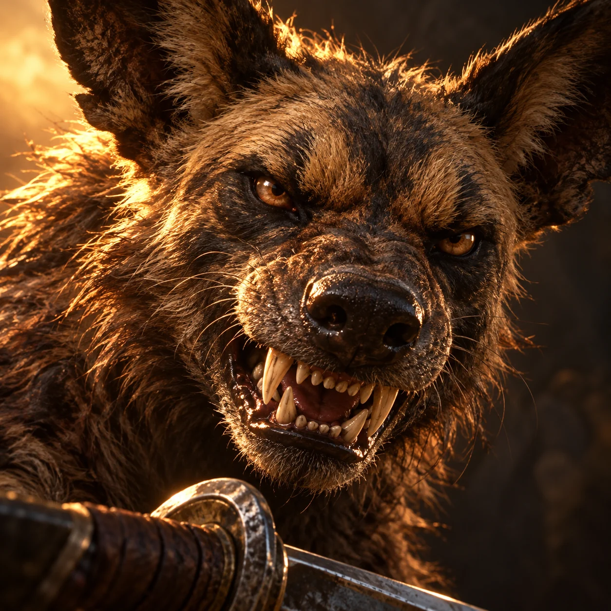
Wild-dog-headed living Yazi in head-and-neck crop without invented lower-body anatomy.
Aura: Threat comes from fierce combat character and snarling wild-dog head (yazi-c02, yazi-c03).
Audit ciri dan sumber
- [object Object]
- [object Object]
Native and200px inspected, all seven checks pass. Exactly one wild-dog head, two normal eyes, snarling canine teeth and upper neck only. Sudden close confronting turn, plain weapon hilt along lower edge. Unsupported lower body entirely cropped, no invented dragon torso/horns/powers. At200px narrowed glare and exposed teeth remain threatening. No text/glyphs, ornament pattern, gore or borrowed design.
Review sumberONE original square premium painterly cinematic Mythics illustration of Yazi, the fierce wild-dog-headed dragon son associated with combat. Native square PNG at least 1024 by 1024 pixels.
ANATOMY: extreme close-up of exactly one WILD DOG head and upper neck, two normal eyes, snarling canine teeth, rough fur; lower body entirely outside crop because source gives no body anatomy; no horns or dragon body invented [yazi-c02]
MOMENT: THRUST its snarling head toward viewer in a sudden confrontational turn, eye corners fiercely narrowed, not a neutral animal portrait [yazi-c03]
POWER: no documented supernatural power; ferocity through jaw motion and physical glare only [yazi-c03]
SCALE & CAMERA: extreme low angle, tight foreshortened framing; no invented gigantic size
LIGHT & WEATHER: a single slanting warm sunset shaft, deep walnut shadows, strong rim light
SURFACE: matted dark wild-dog fur, wet canine nose, worn plain steel hilt
SETTING: indistinct dark backdrop with a small unlettered sword hilt at bottom edge as the documented weapon association, not a throne or invented battlefield [yazi-c04, yazi-c05]
MOOD: imposing and awe-inspiring or menacing as appropriate to the documented character; never cute, calm or decorative. The creature itself dominates and remains striking at 200 pixels.
HARD CONSTRAINTS: no text, lettering, glyphs, logo, border, frame or watermark; no extra heads, limbs or fingers; no design borrowed from any film, game, anime or comic; no nudity or explicit gore; no generic glow aura, neon outline, coloured magic mist or energy ribbons. Bracketed claim IDs are instructions, never visible text.
Yellow Dragon
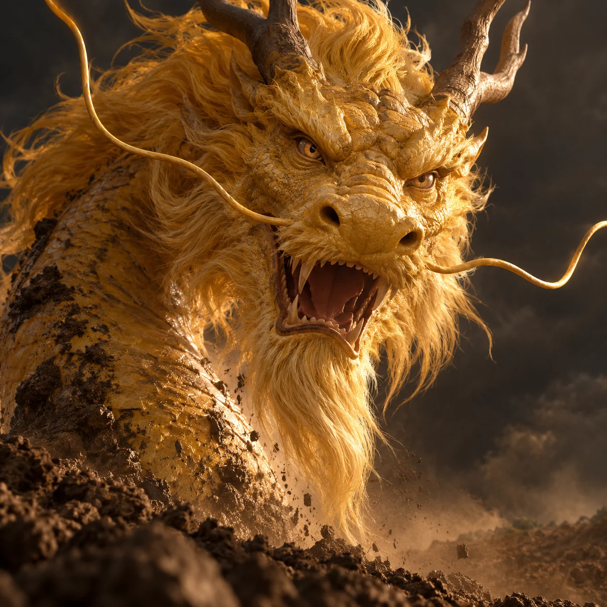
animal-form Yellow Emperor manifestation embodying earth
Aura: RISE and turn its imposing head down toward the low viewer from dark ordinary soil, protective commanding gaze, dust rolling off neck; mouth open in a reverent powerful breath. Supported by yellow-dragon-c01, yellow-dragon-c03, yellow-dragon-c02, yellow-dragon-c03, yellow-dragon-c06.
Audit ciri dan sumber
- [object Object]
- [object Object]
- [object Object]
Native and 200px inspected: Yellow Dragon living face and powerful coiling neck rise toward viewer through ordinary soil; yellow scales and commanding two-eyed gaze dominate, dragon muzzle/jaws/mane/whiskers/branched horn pair make identity immediate at200px. Conventional physiognomy explicitly editorial, category grounded c01/c03. Soil/dust only from physical contact represents earth association c02/c03, no earthquake or breath weapon. Respectful commanding presence, not human-harming scene. One head, limbs cropped, no text/glow/adaptation. Seven Sangar checks pass; ordinary-snake rejection addressed.
Review sumberONE original square premium painterly cinematic Mythics illustration of Yellow Dragon, animal-form Yellow Emperor manifestation embodying earth. Native square PNG at least1024x1024.
ANATOMY: ONE living YELLOW CHINESE DRAGON head/two eyes with powerful scaled coiling neck. Broad noble dragon muzzle, ridged brow, long ochre whiskers, coarse beard/mane and two branching antlerlike horns are conventional editorial rendering of dragon category, not claimed exact source iconography. Body/limbs outside close crop. No wings. [yellow-dragon-c01, yellow-dragon-c03]
MOMENT: RISE and turn its imposing head down toward the low viewer from dark ordinary soil, protective commanding gaze, dust rolling off neck; mouth open in a reverent powerful breath.
POWER: Earth association represented by soil clinging to neck and ordinary contact dust only. No earthquake, cracking earth, beam, glowing aura or breath weapon. [yellow-dragon-c02, yellow-dragon-c03]
SCALE & CAMERA: Extreme low close confrontation; head/being fills most frame, distinguishing dragon face visible at200px; no undocumented gigantic body comparisons.
LIGHT & WEATHER: One narrow warm sidelight against deep walnut shadows, hard rim, dark high contrast; physical water or dust only from documented scene.
SURFACE: Living wet scales, coarse mane hairs, rain-wet opaque cloth when clothed, weathered stone or ordinary soil. Never plastic or glazed ornament.
SETTING: Ordinary dark earthen ground at Chengji, where its appearance is recorded. [yellow-dragon-c06]
MOOD: Reverent overwhelming dragon awe, commanding and imposing, never cute, calm, decorative or ordinary snake.
HARD CONSTRAINTS: No text, lettering, glyphs, logo, border, frame or watermark. No extra heads, eyes, limbs, fingers. No film/game/anime/comic designs, no nudity or explicit gore, no generic glow aura, neon outlines, floating runes or energy ribbons. All clothing fully opaque. Conventional Chinese dragon rendering details are artistic interpretation of documented dragon identity, not new physical powers or claimed exact iconography.
Abdu-Fisch
Menunggu gambar yang lolos audit
Al Ana
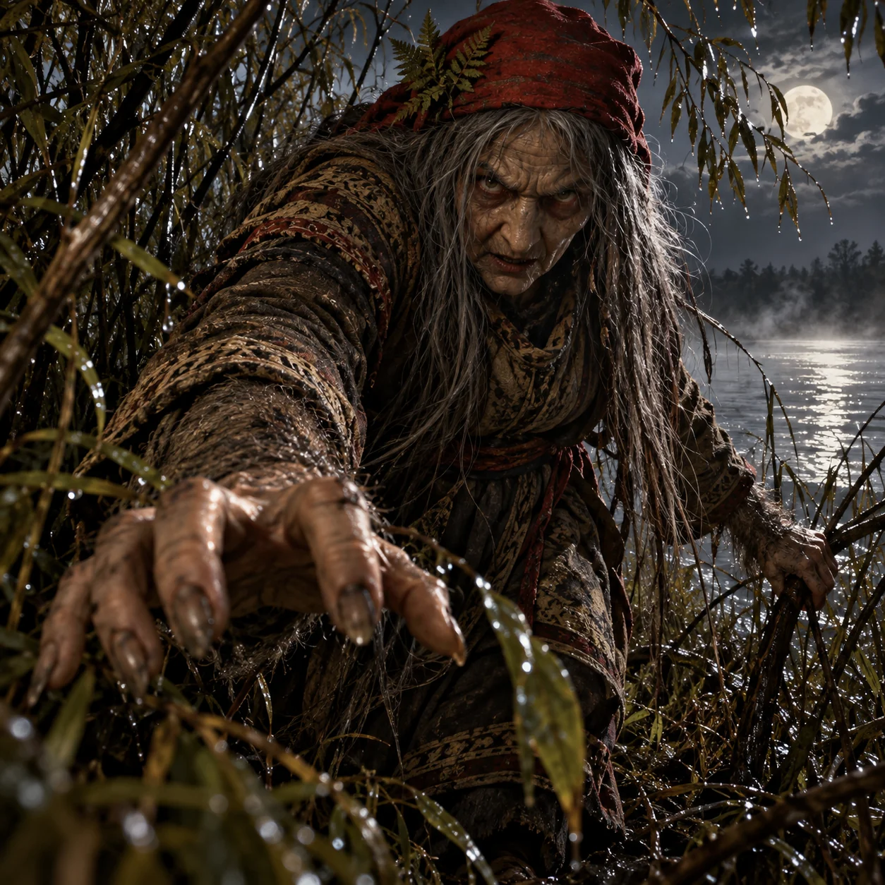
Oral-narrative elderly hairy woman variant, with the documented chest fully covered.
Aura: Push through dense wet riverside thickets, bending toward the viewer with one grasping hand thrust forward. Supported by al-ana-c02, al-ana-c03, al-ana-c01.
Audit ciri dan sumber
- [object Object]
- [object Object]
- [object Object]
Native and 200px inspected. Old wrinkled woman leans and reaches through wet river thickets, with long straight hair, red fern hat and full opaque clothing. One visible head, two eyes and two arms; lower body cropped. Red hat and grasping silhouette remain readable at 200px; no text, glow, child or gore. Seven sangar checks pass; supernatural effects absent deliberately.
Review sumberONE original square premium painterly cinematic Mythics illustration of Al Ana, a deadly female spirit from Turkic riverbank folklore. Native PNG at least 1024 by 1024 pixels.
ANATOMY: An ugly elderly woman with a hairy body visible on her covered neck and hands, very long straight hair, a red hat carrying one fern twig; one head, two eyes, two arms and two legs. Fully opaque heavy clothing conceals her enormous chest; no bare breasts. [al-ana-c02]
MOMENT: Push through dense wet riverside thickets, bending toward the viewer with one grasping hand thrust forward.
POWER: No supernatural visual effects; the documented baby-stealing menace is conveyed by her approach only, with no child depicted. [al-ana-c03]
SCALE & CAMERA: extreme low angle; tight framing and foreshortening provide dominance; do not invent giant size; distinguishing anatomy remains clear at 200 pixels.
LIGHT & WEATHER: Moon side-light, wet branches and natural river mist.
SURFACE: tactile natural fur, hair, feather, skin, cloth, scale or metal as appropriate to the documented form, never plastic.
SETTING: Thickets beside a river. [al-ana-c01]
MOOD: menacing, dangerous and imposing; never cute, calm or decorative. Dark walnut, antique gold and parchment palette with one strong accent.
HARD CONSTRAINTS: no text, lettering, glyph, logo, border, frame or watermark; no extra heads, limbs or fingers; no design borrowed from any film, game, anime or comic; no nudity or explicit gore; no generic glow aura, neon outline or energy ribbons.
Animikii
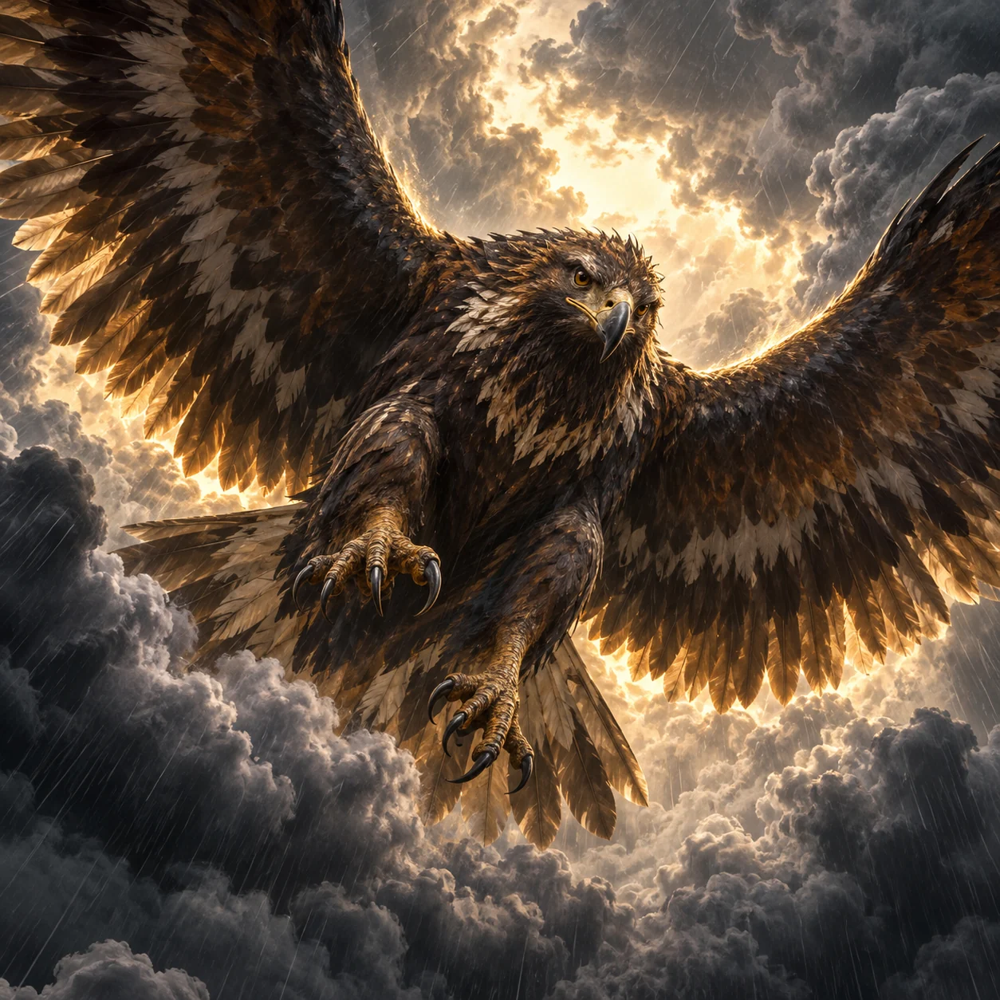
Giant thunderbird in reverent awe, without unrecorded iconography.
Aura: Beat both immense wings downward toward the viewer, descending through dense clouds. Supported by animikii-c01, animikii-c02, animikii-c04.
Audit ciri dan sumber
- [object Object]
- [object Object]
- [object Object]
Native and 200px inspected. One giant bird descends with two spread beating wings and two forward taloned legs, one head and two natural eyes. Cloud banks and rain surround it without lightning, eye beams or fire. Low camera and immense wings dominate the thumbnail with reverent awe. No text or copied iconography. Seven checks pass.
Review sumberONE original square premium painterly cinematic Mythics illustration of Animikii, a giant thunderbird revered in Ojibwe traditions. Native PNG at least 1024 by 1024 pixels.
ANATOMY: One enormous bird with one head, two eyes, two powerful wings and two bird legs; no invented horns, extra faces or ornaments. [animikii-c01]
MOMENT: Beat both immense wings downward toward the viewer, descending through dense clouds.
POWER: Enormous wingbeats churn the storm clouds physically; thunder is the documented power, without invented lightning bolts or fire. [animikii-c02]
SCALE & CAMERA: extreme low angle; documented large being fills the frame, tiny environmental references show scale; distinguishing anatomy remains clear at 200 pixels.
LIGHT & WEATHER: One warm opening in the storm sky rims the feathers; rain streams in the wing-driven air.
SURFACE: tactile natural fur, hair, feather, skin, cloth, scale or metal as appropriate to the documented form, never plastic.
SETTING: Storm clouds surrounding the giant thunderbird; no specific landscape invented. [animikii-c04]
MOOD: reverent awe-inspiring presence, overwhelming and imposing; never cute, calm or decorative. Dark walnut, antique gold and parchment palette with one strong accent.
HARD CONSTRAINTS: no text, lettering, glyph, logo, border, frame or watermark; no extra heads, limbs or fingers; no design borrowed from any film, game, anime or comic; no nudity or explicit gore; no generic glow aura, neon outline or energy ribbons.
Anka (burung mitos)
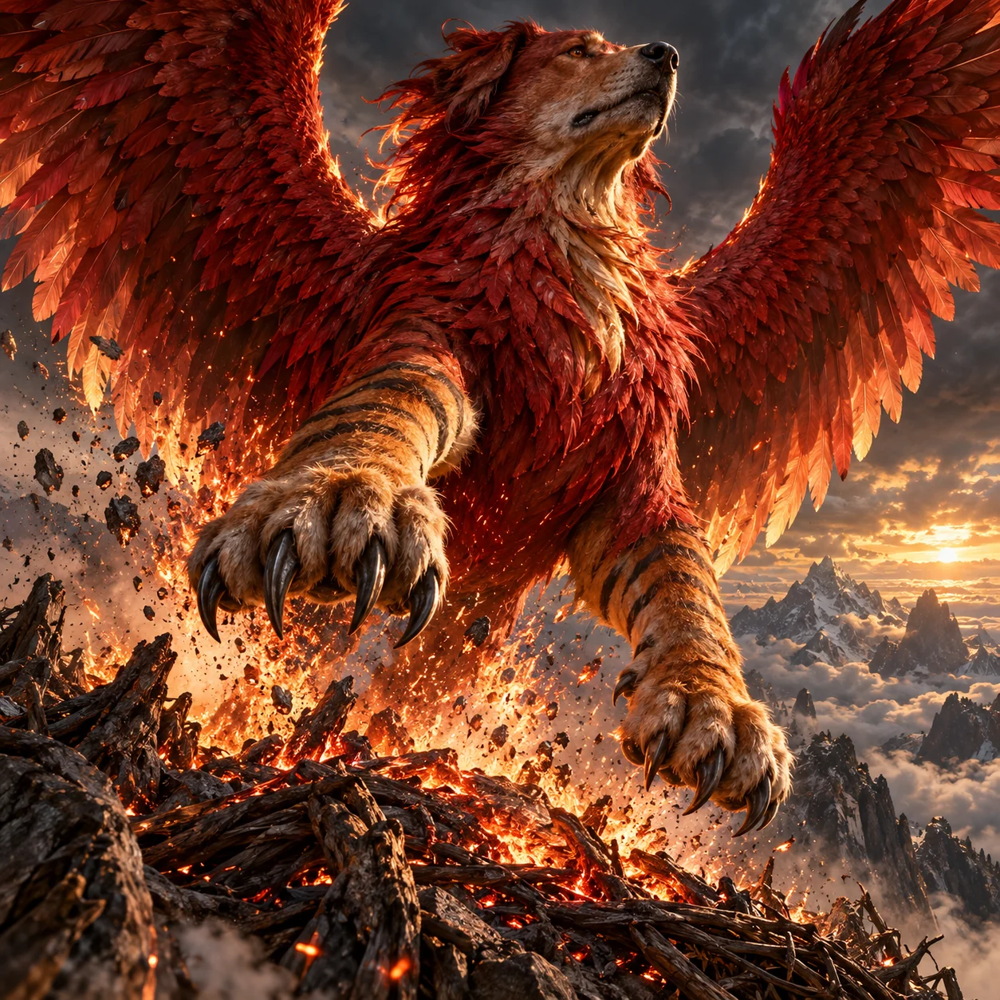
Karakurt dog-headed, tiger-clawed red-bird variant.
Aura: Rise from hot ash at the mountain summit with wings heaving upward and tiger claws reaching toward camera. Supported by anka-c02, anka-c02, anka-c03.
Audit ciri dan sumber
- [object Object]
- [object Object]
- [object Object]
Native and 200px inspected. A single dog head rises above the red bird body, two red wings and two striped furry tiger legs with feline paw toes and claws. Ash, hot embers and summit nest visibly ground rebirth; no energy aura. Canine muzzle and hybrid paws are clear at 200px. First attempt rejected for bird talons, archived. Seven checks pass.
Review sumberONE original square premium painterly cinematic Mythics illustration of Anka, the giant red bird guarding Mount Kaf. Native PNG at least 1024 by 1024 pixels.
ANATOMY: One dog head, two eyes, a red-feathered bird body, two huge red wings and two tiger forelegs ending in large FURRY TIGER PAWS with feline toes and curved retractile tiger claws, NOT scaled bird legs or eagle talons; only one head. [anka-c02]
MOMENT: Rise from hot ash at the mountain summit with wings heaving upward and tiger claws reaching toward camera.
POWER: Rebirth from its own ashes: real embers and ash scatter from the nest beneath the rising bird, no magical ribbons. [anka-c02]
SCALE & CAMERA: extreme low angle; documented large being fills the frame, tiny environmental references show scale; distinguishing anatomy remains clear at 200 pixels.
LIGHT & WEATHER: Embers from the ash nest provide dominant warm rim light amid dark summit wind.
SURFACE: tactile natural fur, hair, feather, skin, cloth, scale or metal as appropriate to the documented form, never plastic.
SETTING: A summit nest on Mount Kaf. [anka-c03]
MOOD: reverent awe-inspiring presence, overwhelming and imposing; never cute, calm or decorative. Dark walnut, antique gold and parchment palette with one strong accent.
HARD CONSTRAINTS: no text, lettering, glyph, logo, border, frame or watermark; no extra heads, limbs or fingers; no design borrowed from any film, game, anime or comic; no nudity or explicit gore; no generic glow aura, neon outline or energy ribbons.
Anki-Kiele
Menunggu gambar yang lolos audit
Ao Guang
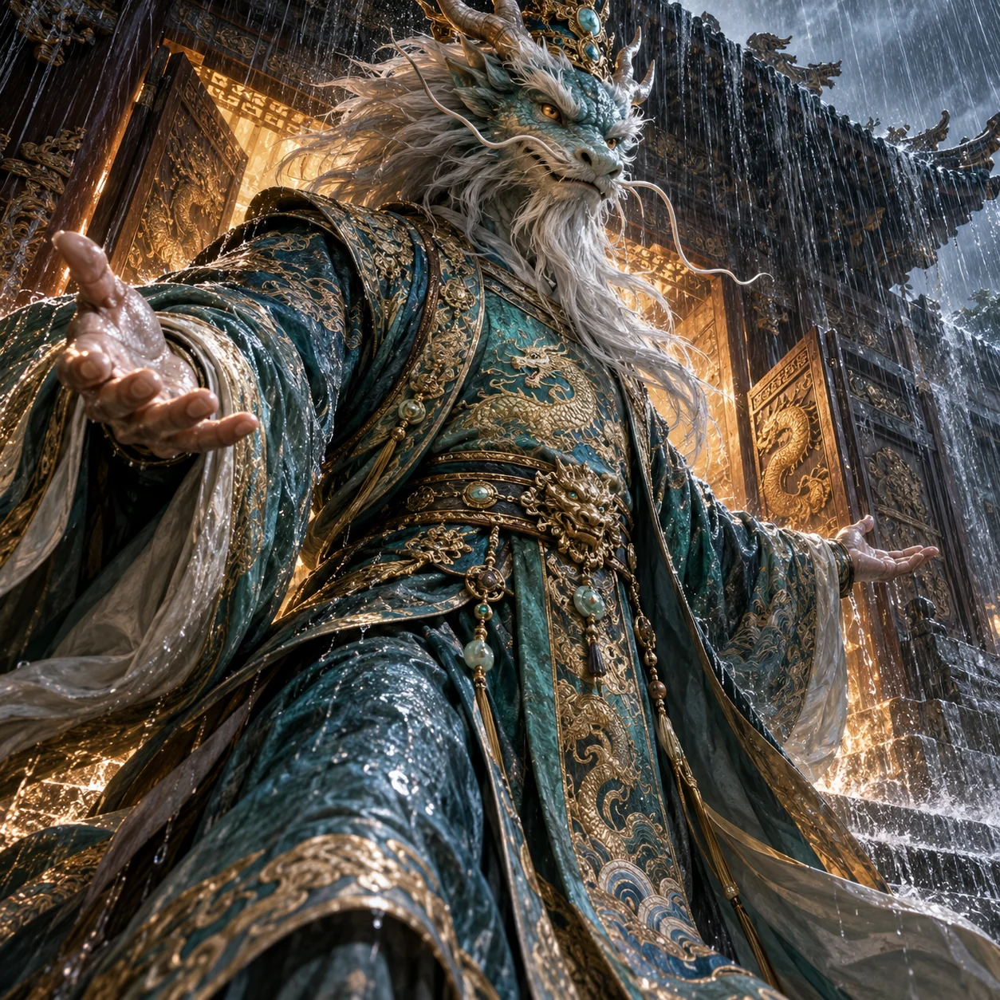
East Sea Dragon King coming out of his palace to greet his guest
Aura: RISE from the palace threshold and stride toward the low viewer in a powerful royal greeting, one open hand welcoming, other hand held outward as rain pours across the palace approach; robes pulled by weather. Supported by ao-guang-c01, ao-guang-c11, ao-guang-c10, ao-guang-c01, ao-guang-c11.
Audit ciri dan sumber
- [object Object]
- [object Object]
- [object Object]
Native and 200px inspected: Dragon King comes out of palace in royal greeting c11, face unmistakably dragon physiognomy above fully opaque sea-green/gold robe. Rain descends physically across palace approach c10, open five-fingered hands and forward stride communicate greeting rather than static portrait; single head/two eyes/two arms, legs within robe. Anthropomorphic king anatomy/crown/dragon muzzle/horns/mane/whiskers and architecture are explicit editorial depiction of Dragon King actor c01/c11, not exact sourced appearance; no small-snake variant c08 imported. King dominates low-camera frame and remains reverently imposing at200px. No text/glow/iron staff/gore/adaptation; seven Sangar checks pass.
Review sumberONE original square premium painterly cinematic Mythics illustration of Ao Guang, East Sea Dragon King coming out of his palace to greet his guest. Native square PNG at least1024x1024.
ANATOMY: ONE royal Dragon King portrayed as an anthropomorphic Chinese dragon ruler, one dragon head/two eyes, two human-shaped arms/two legs within fully OPAQUE layered royal robes, ordinary hands with five fingers. Dragon muzzle, beard, whiskers and two modest horns are conventional editorial rendering of Dragon King category, not claim-specific anatomy. Crown and opaque antique-gold/sea-green brocade are editorial king-costume choices. No tiny snake. [ao-guang-c01, ao-guang-c11]
MOMENT: RISE from the palace threshold and stride toward the low viewer in a powerful royal greeting, one open hand welcoming, other hand held outward as rain pours across the palace approach; robes pulled by weather.
POWER: TORRENTIAL RAIN descends physically around the King, who provides rain in Journey to the West c10; no fire, iron staff, aura or water-energy ribbons. [ao-guang-c10]
SCALE & CAMERA: Extreme low close confrontation; head/being fills most frame, distinguishing dragon face visible at200px; no undocumented gigantic body comparisons.
LIGHT & WEATHER: One narrow warm sidelight against deep walnut shadows, hard rim, dark high contrast; physical water or dust only from documented scene.
SURFACE: Living wet scales, coarse mane hairs, rain-wet opaque cloth when clothed, weathered stone or ordinary soil. Never plastic or glazed ornament.
SETTING: Palace of the East Sea Dragon King; threshold and open doors with falling water visible, royal architecture editorial and uninscribed. [ao-guang-c01, ao-guang-c11]
MOOD: Reverent overwhelming dragon awe, commanding and imposing, never cute, calm, decorative or ordinary snake.
HARD CONSTRAINTS: No text, lettering, glyphs, logo, border, frame or watermark. No extra heads, eyes, limbs, fingers. No film/game/anime/comic designs, no nudity or explicit gore, no generic glow aura, neon outlines, floating runes or energy ribbons. All clothing fully opaque. Conventional Chinese dragon rendering details are artistic interpretation of documented dragon identity, not new physical powers or claimed exact iconography.
Ao Run
Menunggu gambar yang lolos audit
Bai Ze
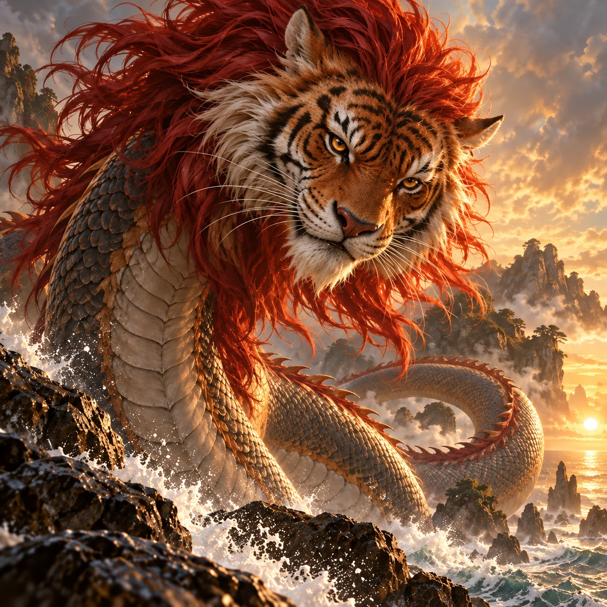
History of Yuan tiger-headed, red-maned dragon-bodied variant without unrecorded horn.
Aura: Turn and lean its tiger head down toward the viewer, red mane moving as the long dragon body coils behind. Supported by bai-ze-c04, bai-ze-c07, bai-ze-c07.
Audit ciri dan sumber
- [object Object]
- [object Object]
- [object Object]
Native and 200px inspected after targeted horn removal. One tiger head with two eyes and a red mane now has natural forehead fur and NO horn, above the coiling scaled dragon body. Coast and mountain c07 retained, wind and physical surf only. Tiger face, red mane and serpentine silhouette distinguish the divine beast at 200px. Initial horned attempt archived per root review. Seven checks pass.
Review sumberONE original square premium painterly cinematic Mythics illustration of Bai Ze, a Chinese divine beast knowledgeable about spirits. Native PNG at least 1024 by 1024 pixels.
ANATOMY: One tiger head with two eyes, a red mane and NO HORN, joined to a long dragon body; one head only, no cow body or human faces. [bai-ze-c04]
MOMENT: Turn and lean its tiger head down toward the viewer, red mane moving as the long dragon body coils behind.
POWER: No invented power effect; reverent authority comes from the documented divine-beast anatomy and knowledge. [bai-ze-c07]
SCALE & CAMERA: extreme low angle; tight framing and foreshortening provide dominance; do not invent giant size; distinguishing anatomy remains clear at 200 pixels.
LIGHT & WEATHER: One low warm sunset beam along the mane, sea spray in the wind.
SURFACE: tactile natural fur, hair, feather, skin, cloth, scale or metal as appropriate to the documented form, never plastic.
SETTING: The coast below Mount Huan. [bai-ze-c07]
MOOD: reverent awe-inspiring presence, overwhelming and imposing; never cute, calm or decorative. Dark walnut, antique gold and parchment palette with one strong accent.
HARD CONSTRAINTS: no text, lettering, glyph, logo, border, frame or watermark; no extra heads, limbs or fingers; no design borrowed from any film, game, anime or comic; no nudity or explicit gore; no generic glow aura, neon outline or energy ribbons.
TARGETED EDIT: Remove the central horn entirely from the supplied image. Restore natural tiger forehead fur in its place. Preserve exactly one tiger head, red mane, coiling scaled dragon body, coast, lighting and pose. No horns anywhere. Do not add anatomy.
Bal-Bal
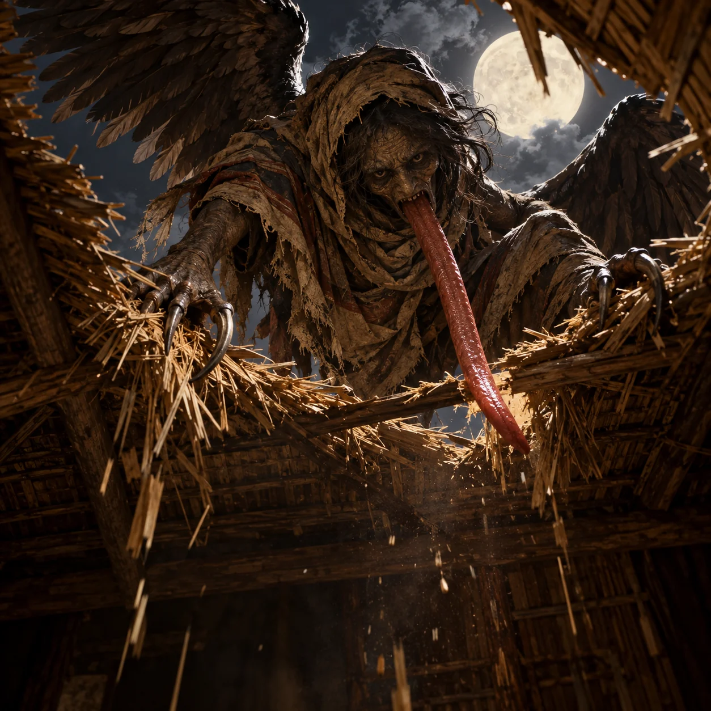
Older Tagbanua winged manlike thatch-tearing variant.
Aura: Claw open a thatch roof, one wing raised, its long tongue thrust down through the opening toward the dark room. Supported by bal-bal-c15, bal-bal-c16, bal-bal-c12.
Audit ciri dan sumber
- [object Object]
- [object Object]
- [object Object]
Native and 200px inspected. One clothed manlike ghoul with two spread wings, two clawed arms and one long tongue tears a visible thatch opening. Two eyes and one face; legs cropped behind roof. Face, claws and tongue dominate at 200px. Physical thatch fragments and dust are tied to c16, no corpse or gore. Seven checks pass; no symbols or text.
Review sumberONE original square premium painterly cinematic Mythics illustration of Bal-Bal, a manlike corpse-stealing creature in Tagbanua traditions. Native PNG at least 1024 by 1024 pixels.
ANATOMY: One manlike head, two eyes, two arms with large curved claws, two wings, two legs, and one exceptionally long tongue; body covered with fully opaque worn cloth. [bal-bal-c15]
MOMENT: Claw open a thatch roof, one wing raised, its long tongue thrust down through the opening toward the dark room.
POWER: Physical tearing of thatch by curved nails, with the long tongue probing the opening; no corpses or gore visible. [bal-bal-c16]
SCALE & CAMERA: extreme low angle; tight framing and foreshortening provide dominance; do not invent giant size; distinguishing anatomy remains clear at 200 pixels.
LIGHT & WEATHER: One moon source silhouettes the spread wings and broken thatch, airborne dust.
SURFACE: tactile natural fur, hair, feather, skin, cloth, scale or metal as appropriate to the documented form, never plastic.
SETTING: A thatched house during a burial vigil, shown only as the roof and dark interior. [bal-bal-c12]
MOOD: menacing, dangerous and imposing; never cute, calm or decorative. Dark walnut, antique gold and parchment palette with one strong accent.
HARD CONSTRAINTS: no text, lettering, glyph, logo, border, frame or watermark; no extra heads, limbs or fingers; no design borrowed from any film, game, anime or comic; no nudity or explicit gore; no generic glow aura, neon outline or energy ribbons.
Ball-tailed cat
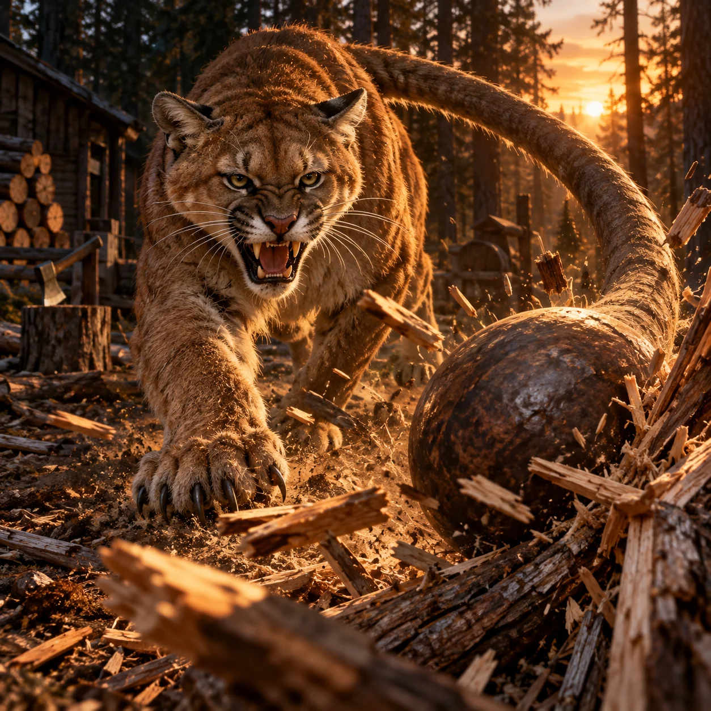
Smooth solid ball-tail variant; no spiked Sliver Cat features.
Aura: Lunge directly forward while the long tail swings its enormous ball end across the foreground toward the viewer. Supported by ball-tailed-cat-c01, ball-tailed-cat-c07, ball-tailed-cat-c06.
Audit ciri dan sumber
- [object Object]
- [object Object]
- [object Object]
Native and 200px inspected. Cougar-like cat lunges with one head, two eyes, four-legged body with rear legs partially overlapped, and one long tail ending in an unmistakable smooth solid ball. Ball strikes dry wood with flying splinters c07; no spikes, victims or magical effects. Open jaws and heavy ball retain menace at 200px. Seven checks pass.
Review sumberONE original square premium painterly cinematic Mythics illustration of Ball-tailed Cat, a mountain-lion-like fearsome critter of North American lumberjack tales. Native PNG at least 1024 by 1024 pixels.
ANATOMY: One cougar-like cat with one head, two eyes, four paws, and one exceptionally long tail terminating in a single solid smooth heavy ball; no spikes. [ball-tailed-cat-c01]
MOMENT: Lunge directly forward while the long tail swings its enormous ball end across the foreground toward the viewer.
POWER: The ball tail strikes a dead branch and throws physical wood splinters, a non-gory illustration of its documented striking use. [ball-tailed-cat-c07]
SCALE & CAMERA: extreme low angle; tight framing and foreshortening provide dominance; do not invent giant size; distinguishing anatomy remains clear at 200 pixels.
LIGHT & WEATHER: One low warm sunset beam, deep walnut forest shadows and sawdust.
SURFACE: tactile natural fur, hair, feather, skin, cloth, scale or metal as appropriate to the documented form, never plastic.
SETTING: A dim wooded logging-camp edge. [ball-tailed-cat-c06]
MOOD: menacing, dangerous and imposing; never cute, calm or decorative. Dark walnut, antique gold and parchment palette with one strong accent.
HARD CONSTRAINTS: no text, lettering, glyph, logo, border, frame or watermark; no extra heads, limbs or fingers; no design borrowed from any film, game, anime or comic; no nudity or explicit gore; no generic glow aura, neon outline or energy ribbons.
Beaman Monster
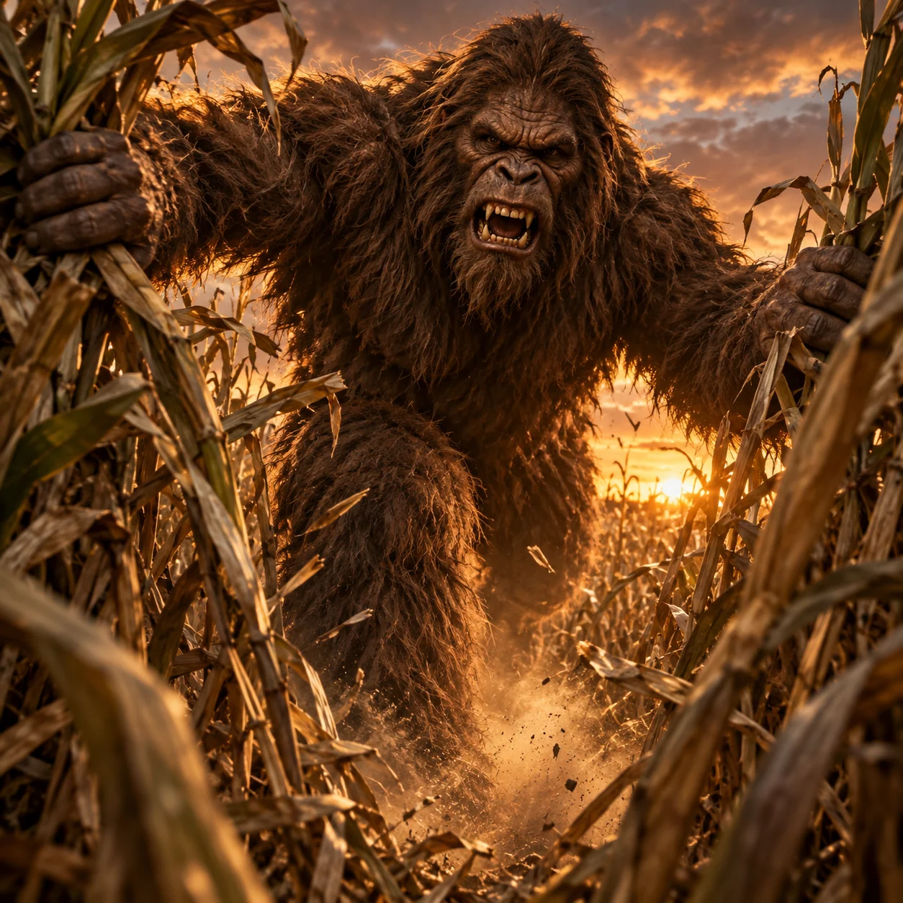
Sasquatch-like reported variant; no transfer of its alleged father's twelve-foot height.
Aura: Force apart tall corn stalks with both hands and surge toward the viewer with bared ordinary ape teeth. Supported by beaman-monster-c06, beaman-monster-c08, beaman-monster-c08.
Audit ciri dan sumber
- [object Object]
- [object Object]
- [object Object]
Native and 200px inspected. Hairy ape-like Sasquatch variant advances, gripping and separating corn stalks; one head, two eyes, two arms and two-legged body with rear leg partly occluded. No wolf traits, twelve-foot height claim or magic glow. Low close angle and bared teeth remain dangerous at 200px; dust and bent corn are natural motion. Seven checks pass.
Review sumberONE original square premium painterly cinematic Mythics illustration of Beaman Monster, the Sasquatch-like creature recalled in Missouri Beaman folklore. Native PNG at least 1024 by 1024 pixels.
ANATOMY: One ape-like hairy Sasquatch figure with one head, two eyes, two arms and two legs; no wolf head, no invented horns or glowing eyes. [beaman-monster-c06]
MOMENT: Force apart tall corn stalks with both hands and surge toward the viewer with bared ordinary ape teeth.
POWER: No documented power; natural stalks bend and dust rises from its movement only. [beaman-monster-c08]
SCALE & CAMERA: extreme low angle; tight framing and foreshortening provide dominance; do not invent giant size; distinguishing anatomy remains clear at 200 pixels.
LIGHT & WEATHER: One warm dusk beam through the corn, deep shadow and dry field dust.
SURFACE: tactile natural fur, hair, feather, skin, cloth, scale or metal as appropriate to the documented form, never plastic.
SETTING: A cornfield near Beaman and Sedalia. [beaman-monster-c08]
MOOD: menacing, dangerous and imposing; never cute, calm or decorative. Dark walnut, antique gold and parchment palette with one strong accent.
HARD CONSTRAINTS: no text, lettering, glyph, logo, border, frame or watermark; no extra heads, limbs or fingers; no design borrowed from any film, game, anime or comic; no nudity or explicit gore; no generic glow aura, neon outline or energy ribbons.
Bramrachokh
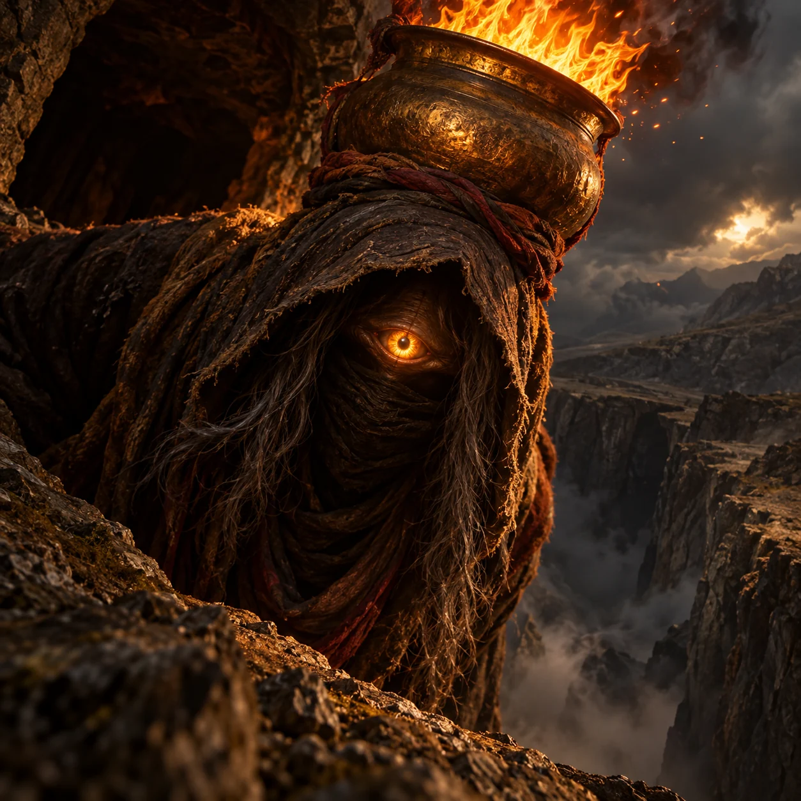
Documented forehead-eye and fire-pot manifestation; unstated lower anatomy omitted.
Aura: Lean from the dark beside a chasm toward the viewer, forehead eye facing camera as the fiery pot tilts forward without spilling. Supported by bramrachokh-c03, bramrachokh-c04, bramrachokh-c05.
Audit ciri dan sumber
- [object Object]
- [object Object]
- [object Object]
Native and 200px inspected. A wrapped hooded spirit leans toward viewer beside a desolate cave and ditch, balancing one pot of physical flames. One bright forehead eye is visible while lower face and ordinary eye locations are concealed by opaque wrapping and shadow. Fire-pot and luminous eye stay unmistakable at 200px; no invented lower body, aura or text. Seven checks pass.
Review sumberONE original square premium painterly cinematic Mythics illustration of Bramrachokh, a Kashmiri spirit that misleads travelers with light. Native PNG at least 1024 by 1024 pixels.
ANATOMY: A tight head-and-shoulder spirit close-up with one head balancing a large pot full of real fire and exactly one clearly visible bright eye centered on the forehead; ordinary eye area entirely concealed in shadow under an opaque hood, no invented extra eyes. [bramrachokh-c03]
MOMENT: Lean from the dark beside a chasm toward the viewer, forehead eye facing camera as the fiery pot tilts forward without spilling.
POWER: The documented forehead eye shines brightly and the pot contains physical flames; their deceptive light illuminates the dangerous edge. [bramrachokh-c04]
SCALE & CAMERA: extreme low angle; tight framing and foreshortening provide dominance; do not invent giant size; distinguishing anatomy remains clear at 200 pixels.
LIGHT & WEATHER: The pot fire is the dominant orange light, with natural smoke and embers; the bright forehead eye is a smaller localized light.
SURFACE: tactile natural fur, hair, feather, skin, cloth, scale or metal as appropriate to the documented form, never plastic.
SETTING: A desolate waste place beside a ditch and cave. [bramrachokh-c05]
MOOD: menacing, dangerous and imposing; never cute, calm or decorative. Dark walnut, antique gold and parchment palette with one strong accent.
HARD CONSTRAINTS: no text, lettering, glyph, logo, border, frame or watermark; no extra heads, limbs or fingers; no design borrowed from any film, game, anime or comic; no nudity or explicit gore; no generic glow aura, neon outline or energy ribbons.
Bulgasari (creature)
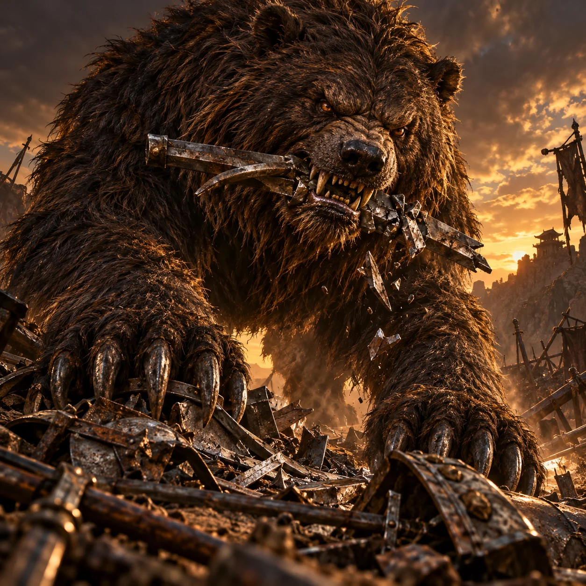
Korean Encyclopedia documented bear-shaped variant, shown actively eating metal.
Aura: Crush and bite iron swords and metal implements while planting its forepaws toward the camera. Supported by bulgasari-creature-c12, bulgasari-creature-c10, bulgasari-creature-c10.
Audit ciri dan sumber
- [object Object]
- [object Object]
- [object Object]
Native and 200px inspected. One immense bear-shaped beast with two eyes and four-legged bear body, rear legs occluded by low framing, bites bent iron blades and braces two forepaws over metal fragments. No composite horns or trunk. Metal-eating action and growth distinguish it from an ordinary bear at 200px. Physical fragments and ground dust only, no fire or glow. Seven checks pass.
Review sumberONE original square premium painterly cinematic Mythics illustration of Bulgasari, the metal-eating creature of Korean folklore. Native PNG at least 1024 by 1024 pixels.
ANATOMY: One enormous bear-shaped mythical beast, one bear head with two eyes, four bear legs, no elephant trunk or rhinoceros horn borrowed from alternative composite variants. [bulgasari-creature-c12]
MOMENT: Crush and bite iron swords and metal implements while planting its forepaws toward the camera.
POWER: Physically devour bent metal with broken iron fragments beneath its mouth, reflecting metal consumption and bodily growth; no invented fire immunity effect. [bulgasari-creature-c10]
SCALE & CAMERA: extreme low angle; documented large being fills the frame, tiny environmental references show scale; distinguishing anatomy remains clear at 200 pixels.
LIGHT & WEATHER: One warm dusk source across matted fur and freshly bent dull metal, raised ground dust.
SURFACE: tactile natural fur, hair, feather, skin, cloth, scale or metal as appropriate to the documented form, never plastic.
SETTING: A dark grounded setting filled with discarded iron implements from the documented metal-eating tale. [bulgasari-creature-c10]
MOOD: menacing, dangerous and imposing; never cute, calm or decorative. Dark walnut, antique gold and parchment palette with one strong accent.
HARD CONSTRAINTS: no text, lettering, glyph, logo, border, frame or watermark; no extra heads, limbs or fingers; no design borrowed from any film, game, anime or comic; no nudity or explicit gore; no generic glow aura, neon outline or energy ribbons.
Caboclo de agua
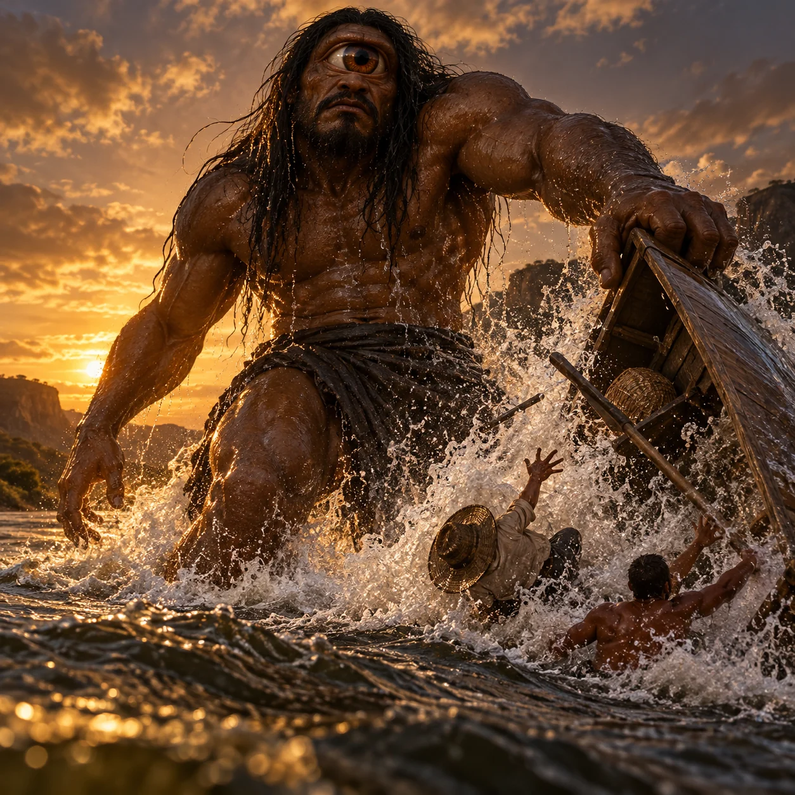
Giant bronze one-eyed variant, choosing it over the conflicting short copper-coloured account.
Aura: Rear out of river water toward the viewer while one immense hand tips a small canoe sideways. Supported by caboclo-de-agua-c02, caboclo-de-agua-c10, caboclo-de-agua-c01.
Audit ciri dan sumber
- [object Object]
- [object Object]
- [object Object]
Native and 200px inspected. One giant bronze-skinned muscular man has exactly one huge central eye and two arms, lower legs submerged; opaque waist cloth covers intimate anatomy. One hand tilts a canoe over small boatmen without injury or gore. Spray is physical overturning c10. Dominating scale and eye remain imposing at 200px, no text or aura. Seven checks pass.
Review sumberONE original square premium painterly cinematic Mythics illustration of Caboclo de Agua, a formidable river being of Brazil's Sao Francisco River. Native PNG at least 1024 by 1024 pixels.
ANATOMY: One giant muscular humanoid with bronze skin, exactly one huge eye centered on its head, two arms and two legs; fully opaque dark waist cloth covers all intimate anatomy. [caboclo-de-agua-c02]
MOMENT: Rear out of river water toward the viewer while one immense hand tips a small canoe sideways.
POWER: Physically overturn a canoe and churn river spray, a documented deed; no invented beams or glowing skin. [caboclo-de-agua-c10]
SCALE & CAMERA: extreme low angle; documented large being fills the frame, tiny environmental references show scale; distinguishing anatomy remains clear at 200 pixels.
LIGHT & WEATHER: One copper sunset source rims the bronze skin, dark water and intense real spray.
SURFACE: tactile natural fur, hair, feather, skin, cloth, scale or metal as appropriate to the documented form, never plastic.
SETTING: The Sao Francisco River. [caboclo-de-agua-c01]
MOOD: menacing, dangerous and imposing; never cute, calm or decorative. Dark walnut, antique gold and parchment palette with one strong accent.
HARD CONSTRAINTS: no text, lettering, glyph, logo, border, frame or watermark; no extra heads, limbs or fingers; no design borrowed from any film, game, anime or comic; no nudity or explicit gore; no generic glow aura, neon outline or energy ribbons.
Cavalo do pensamento
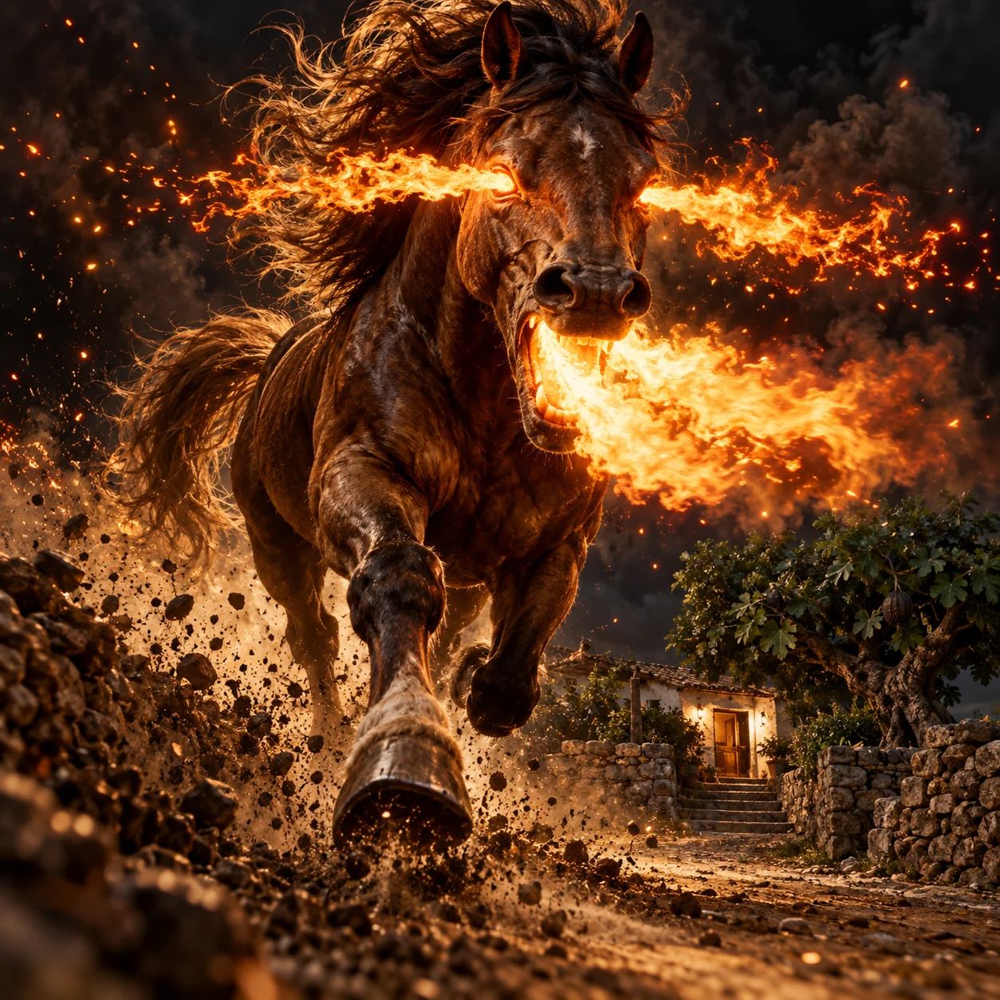
Sarmento fire-eyed, fire-mouthed horse variant; speed depicted as grounded galloping, not unsupported flight.
Aura: Gallop toward the viewer at overwhelming speed, forelegs driving into the earth. Supported by cavalo-do-pensamento-c02, cavalo-do-pensamento-c02, cavalo-do-pensamento-c04.
Audit ciri dan sumber
- [object Object]
- [object Object]
- [object Object]
Native and 200px inspected. One horse head with two eyes, four-legged galloping body with rear legs partly occluded, one tail, no wings or horn. Physical flames stream from BOTH eyes and open mouth exactly c02; kicked soil establishes ground contact rather than flight. Home entrance and fig tree appear behind c04. Fire and lunging hoof dominate thumbnail, no text or energy aura. Seven checks pass.
Review sumberONE original square premium painterly cinematic Mythics illustration of Cavalo do Pensamento, the Portuguese legendary horse of thought. Native PNG at least 1024 by 1024 pixels.
ANATOMY: One horse with one head, two eyes, four legs and one tail, no wings or horns. [cavalo-do-pensamento-c02]
MOMENT: Gallop toward the viewer at overwhelming speed, forelegs driving into the earth.
POWER: Real fire jets from both eyes and the mouth as explicitly documented; sparks and kicked earth stream behind, no flight or wings. [cavalo-do-pensamento-c02]
SCALE & CAMERA: extreme low angle; tight framing and foreshortening provide dominance; do not invent giant size; distinguishing anatomy remains clear at 200 pixels.
LIGHT & WEATHER: Its eye-and-mouth fire is the dominant amber light, smoke and sparks against darkness.
SURFACE: tactile natural fur, hair, feather, skin, cloth, scale or metal as appropriate to the documented form, never plastic.
SETTING: The grounded route toward a home entrance and a fig tree, both small behind the galloping horse. [cavalo-do-pensamento-c04]
MOOD: menacing, dangerous and imposing; never cute, calm or decorative. Dark walnut, antique gold and parchment palette with one strong accent.
HARD CONSTRAINTS: no text, lettering, glyph, logo, border, frame or watermark; no extra heads, limbs or fingers; no design borrowed from any film, game, anime or comic; no nudity or explicit gore; no generic glow aura, neon outline or energy ribbons.
Chashkel
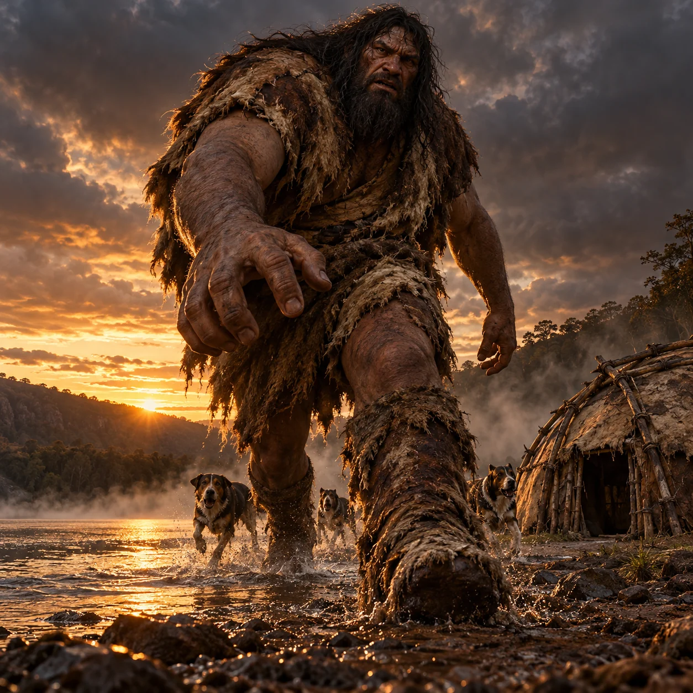
Living giant before defeat, with his trained hunting dogs; no mutilation or dead victims.
Aura: Stride from the riverside hut toward the viewer, bending down with one powerful grasping hand, dogs rushing behind his feet. Supported by chashkel-c01, chashkel-c07, chashkel-c03.
Audit ciri dan sumber
- [object Object]
- [object Object]
- [object Object]
Native and 200px inspected. One huge humanlike giant with one head, two eyes, two arms and two legs strides toward viewer, reaching with a large hand. Opaque hide clothing covers his torso and intimate anatomy. Three small hunting dogs and hut at riverbank match c07 and establish documented giant scale c01. Splashing mud only, no victims, bones or gore. Giant and reach remain imposing at 200px; seven checks pass.
Review sumberONE original square premium painterly cinematic Mythics illustration of Chashkel, the feared anthropophagous giant in Selknam mythology. Native PNG at least 1024 by 1024 pixels.
ANATOMY: One enormous humanlike giant, one head with two eyes, two arms and two legs, fully opaque rough hide garments; no invented horns, extra eyes or weapons. [chashkel-c01]
MOMENT: Stride from the riverside hut toward the viewer, bending down with one powerful grasping hand, dogs rushing behind his feet.
POWER: No magical power effect; natural mud splashes from his stride, and the documented hunting dogs follow without gore. [chashkel-c07]
SCALE & CAMERA: extreme low angle; documented large being fills the frame, tiny environmental references show scale; distinguishing anatomy remains clear at 200 pixels.
LIGHT & WEATHER: One low sunset slit through dark cloud, rim light on rough cloth and moving river mist.
SURFACE: tactile natural fur, hair, feather, skin, cloth, scale or metal as appropriate to the documented form, never plastic.
SETTING: The bank of the Mac Lelan river beside the giant's hut. [chashkel-c03]
MOOD: menacing, dangerous and imposing; never cute, calm or decorative. Dark walnut, antique gold and parchment palette with one strong accent.
HARD CONSTRAINTS: no text, lettering, glyph, logo, border, frame or watermark; no extra heads, limbs or fingers; no design borrowed from any film, game, anime or comic; no nudity or explicit gore; no generic glow aura, neon outline or energy ribbons.
Chullachaki
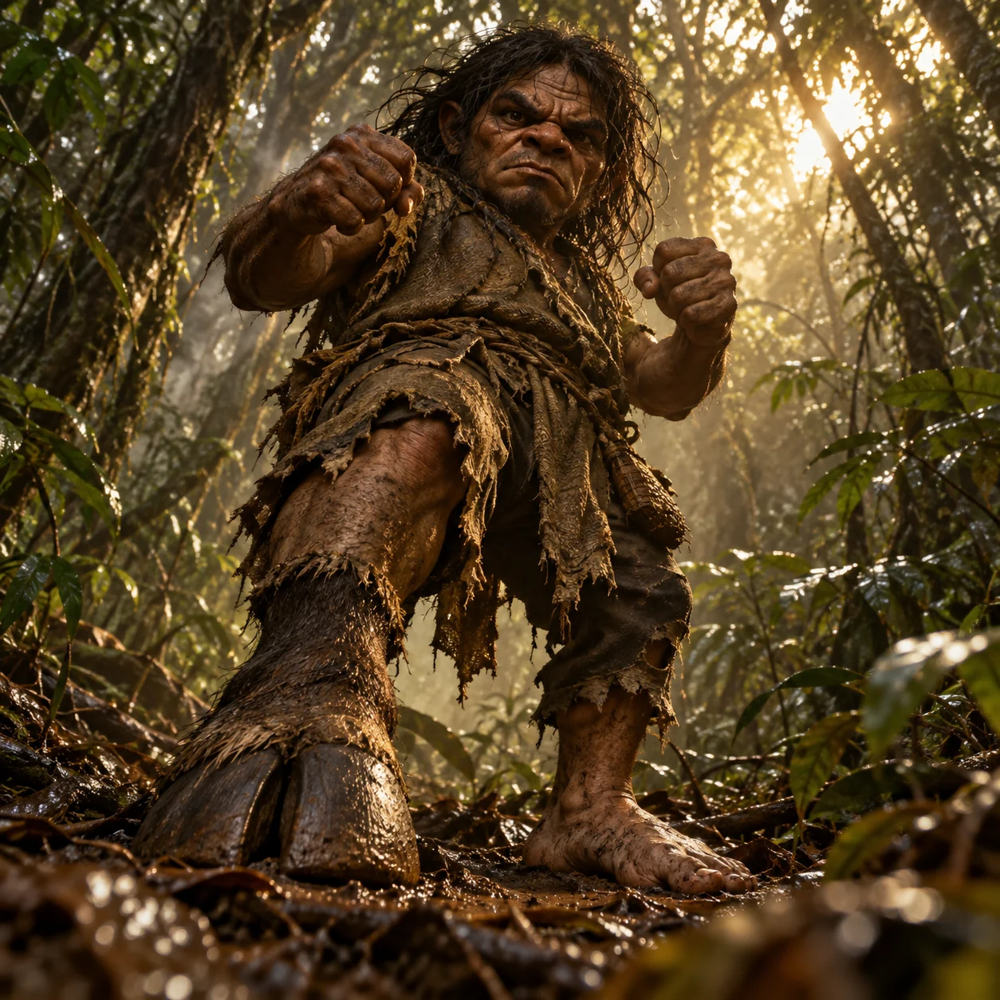
Short ragged fist-challenger variant with one hoof foot; preserve shortness through close camera, not giant scale.
Aura: Advance with both clenched fists raised in a direct challenge to the viewer, the mismatched feet planted visibly in the foreground. Supported by chullachaki-c02, chullachaki-c10, chullachaki-c01.
Audit ciri dan sumber
- [object Object]
- [object Object]
- [object Object]
Native and 200px inspected. Short squat adult figure raises two clenched fists, with one head, two eyes, two arms and unequal legs. One enlarged hoof foot is prominent beside an ordinary bare human foot; ragged opaque clothing covers torso and intimate anatomy. Ground-level close camera magnifies the foot without giant size. Fists and mismatched feet remain clear at 200px; no curse glow or extra anatomy. Seven checks pass.
Review sumberONE original square premium painterly cinematic Mythics illustration of Chullachaki, the strange short forest being of the Peruvian and Brazilian Amazon. Native PNG at least 1024 by 1024 pixels.
ANATOMY: One very short ugly adult man in fully opaque ragged clothes, one head, two eyes, two arms and two unequal-length legs; one ordinary human foot and one clearly exposed larger hoof-shaped foot. [chullachaki-c02]
MOMENT: Advance with both clenched fists raised in a direct challenge to the viewer, the mismatched feet planted visibly in the foreground.
POWER: No visible curse or invented shapeshifting glow; the documented challenge and anatomy provide the unsettling moment. [chullachaki-c10]
SCALE & CAMERA: extreme low angle; tight framing and foreshortening provide dominance; do not invent giant size; distinguishing anatomy remains clear at 200 pixels.
LIGHT & WEATHER: One warm low beam through foliage and wet forest mist, no glowing eyes.
SURFACE: tactile natural fur, hair, feather, skin, cloth, scale or metal as appropriate to the documented form, never plastic.
SETTING: Dense Amazonian forest. [chullachaki-c01]
MOOD: reverent awe-inspiring presence, overwhelming and imposing; never cute, calm or decorative. Dark walnut, antique gold and parchment palette with one strong accent.
HARD CONSTRAINTS: no text, lettering, glyph, logo, border, frame or watermark; no extra heads, limbs or fingers; no design borrowed from any film, game, anime or comic; no nudity or explicit gore; no generic glow aura, neon outline or energy ribbons.